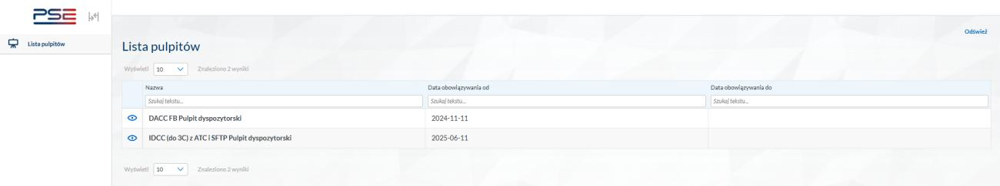
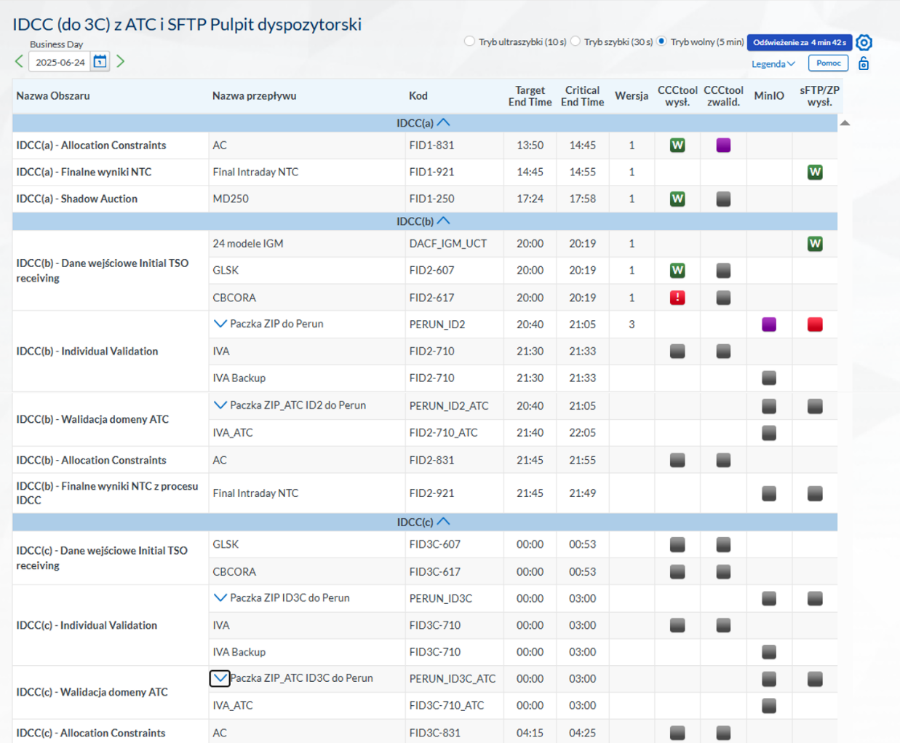
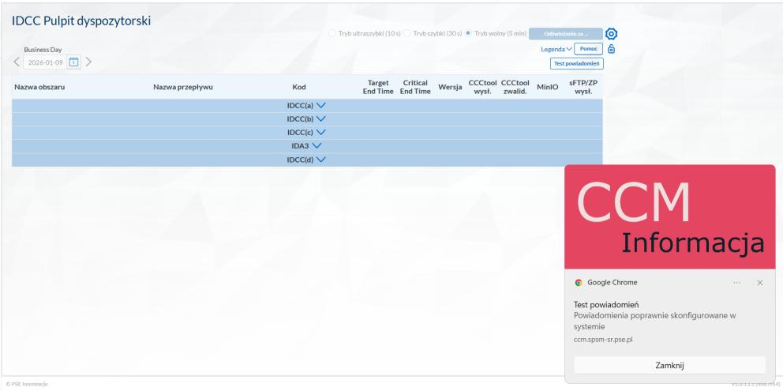
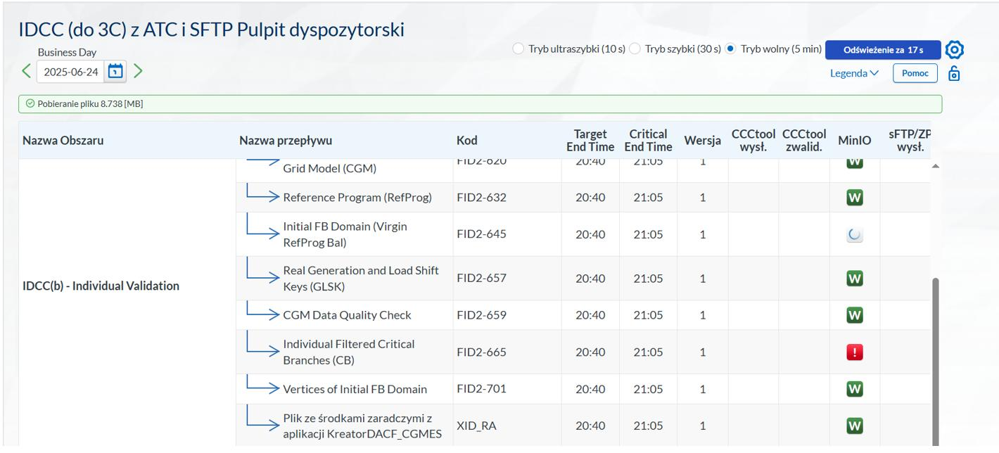
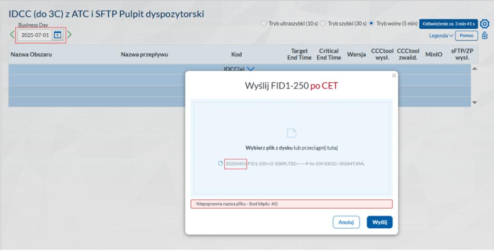
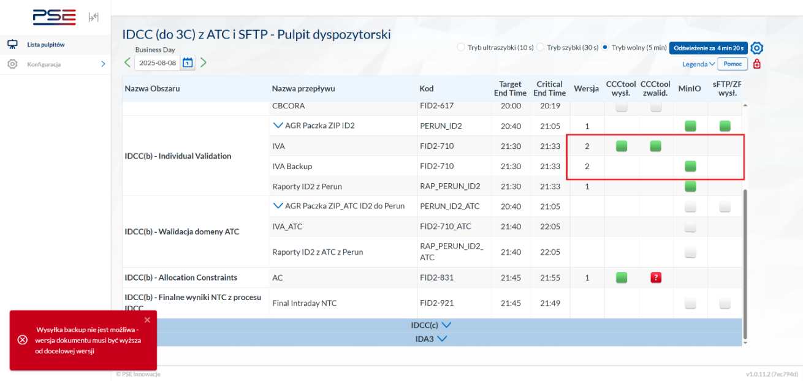

Procedura operacyjna dyspozytora PSE
w procesie Intraday Capacity Calculation (IDCC)
| Numer dokumentu | FBA_TSO_IDCC | Wersja | 1.0_FINAL_DRAFT |
|---|---|---|---|
| Data | 10 czerwca 2026 | Status | DRAFT |
| Dotyczy procesów | IDCC(a), IDCC(b), IDCC(c), IDCC(d) — region Core — pełny proces TSO PSE | ||
| Podstawy prawne | Core ID CCM 6th RfA (art. 4(10), art. 18, art. 20, art. 26(6), Annex 2) | ||
| Autor | Wydział Wsparcia Procesów Operatorskich, PSE S.A. | ||
| Wersja | Data | Autor | Podsumowanie zmian |
|---|---|---|---|
| 1.0_FINAL_DRAFT | 21.04.2026 | PSE DP | Projekt finalny procedury IDCC TSO |
Dokument opisuje pełny przebieg procesu IDCC z perspektywy TSO PSE — od przygotowania danych wejściowych (IGM, CB, GLSK) przez walidację FBA/ATC po monitoring wyników. Obejmuje tryb Happy Day, użycie narzędzi wewnętrznych oraz dopuszczone działania backupowe. W przypadku zdarzenia wykraczającego poza Happy Day dyspozytor wykonuje kolejne czynności zgodnie z właściwym scenariuszem ryzyka (Rozdział 9). Wartości czasowe TET/CET mają charakter referencyjny; wiążące są aktualne parametry w HLBP.
3. Opis procesu IDCC z perspektywy TSO
3.1. Iteracje procesu IDCC
| Iteracja | Dzień | Zakres TS | Ref. TET | Podstawowe wejście | Zakres działań TSO |
|---|---|---|---|---|---|
| IDCC(a) | D-1 | 00:30–23:30 | 15:00 D-1 | D-2CF / DA leftovers | Wyłącznie monitoring walidacji ATC; brak walidacji FBA w Perun4V |
| IDCC(b) | D-1 | 00:30–23:30 | 21:45 D-1 | DACF | IGM do RCC (D-1 ~18:00–20:19) → TSO Data Gathering (CB/GLSK) → pełna walidacja FBA + monitoring ATC |
| IDCC(c) | D | 06:30–23:30 | 04:30 D | IDCF (run 02:15) | IGM do RCC (target 02:15) → TSO Data Gathering (CB/GLSK) → pełna walidacja FBA + monitoring ATC |
| IDCC(d) | D | 12:30–23:30 | 09:45 D | IDCF (run 07:15) | IGM do RCC (target 07:15) → TSO Data Gathering (CB/GLSK) → pełna walidacja FBA + monitoring ATC |
Iteracja IDCC(a) ma charakter odmienny — PSE nie dostarcza IGM, nie realizuje TSO Data Gathering, nie wykonuje walidacji FBA przez Perun4V. Zakres działania ogranicza się do monitorowania walidacji ATC (FID1-928).
3.2. Ujęcie procesowe IDCC(a) — pełny przebieg centralny i wyznaczanie ATC
Iteracja IDCC(a) przebiega w D-1 i obejmuje sekwencję faz centralnych realizowanych przez CCC w CCCt, zakończoną walidacją ATC po stronie CCA. PSE nie dostarcza IGM, nie realizuje TSO Data Gathering, nie wykonuje walidacji FBA — zakres działania ogranicza się do monitorowania wyniku walidacji ATC (FID1-928).
3.2.1. Fazy centralne procesu IDCC(a)
| Faza | Opis | Rola PSE |
|---|---|---|
| Distribution of Initial Data | CCC dystrybuuje do XBID wyniki DACC: Individual AACs (ID1-373-XX), ID NTCs (ID1-921-XX). Są to zdolności przejęte z procesu DA. | Brak aktywnych działań |
| Calculate Default DA Domain | CCCt oblicza zapasową domenę DA domain na wypadek braku danych z DA CCCt. Wynik: ID1-667 (Final FB Domain LTNom Bal). | Brak aktywnych działań |
| DACC Data Gathering | CCCt odbiera z DA CCCt: D2CF, RefProg, CB, merged GLSK, merged LTA, LT nominations. Na tej podstawie tworzona jest domena DA leftover. | Brak aktywnych działań |
| MCR Data Gathering | Zebranie wyników Market Coupling (MC Results, Shadow Auction Results w przypadku decouplingu). Wyznaczenie AACs per granica. Dystrybucja AACs do XBID i oczekiwanie na ACK. | Brak aktywnych działań (wyjątek: decoupling — patrz R14) |
| Calculate Enlarged Domain (after DACC) | Obliczenie powiększonej domeny FB (LTA + minRAM enlarged) na podstawie danych z DACC i MCR. Wynik: ID1-650. | Brak aktywnych działań |
| Initial ID ATC Extraction | Ekstrakcja początkowych ATC/NTC na podstawie domeny FB, AAC Grid Model i AACs z XBID. Wyniki: ID1-882 (Initial ATCs), ID1-921-XX (NTCs do XBID), ID1-923 (DQC). | Brak aktywnych działań |
| Individual CB and ATC Validation | Okno walidacji 40 min (min. 25 min zawsze). TSO mogą wysłać Individual ATC Validation (FID1-928) ograniczający ATC na swoich granicach. Wynik: ID1-929 (Merged ATC Validation). | Monitoring FID1-928 — jedyny element aktywny PSE |
| Final ID ATC Extraction | Obliczenie finalnych ATC/NTC z uwzględnieniem merged walidacji ATC. Dystrybucja NTCs (ID1-921) do XBID. Deadline: 15:00 D-1 (max 17:20). | Brak aktywnych działań |
| Calculate Enlarged Domain at MCP | Obliczenie domeny FB przesuniętej do Market Clearing Point. Wynik: ID1-690. | Brak aktywnych działań |
3.2.2. Mechanizm wyznaczania ATC przez CCA w IDCC(a)
Aplikacja CCA (narzędzie lokalne PSE) implementuje automatyczny mechanizm weryfikacji domeny ATC w procesie IDCC(a). Mechanizm przebiega w następujących krokach:
| Krok | Czas / Plik | Opis |
|---|---|---|
| 1. Fallback FID1-928v1 | ~10:00 D-1FID1-928v1 |
Na początku procesu IDCC(a) CCA generuje plik z wartościami walidacji ATC ustawionymi na 0 na wszystkich kierunkach i granicach polskich: PL→DE, PL→CZ, PL→SK, DE→PL, CZ→PL, SK→PL. Jest to zabezpieczenie fallbackowe przed dostępnością wyników SDAC — jeżeli dalszy proces nie powiedzie się, w CCCt pozostanie wersja zerowa, która nie zwiększy ATC. |
| 2. Trigger — wyniki SDAC | po ~13:00 D-1 | Po rozwiązaniu rynku DA (SDAC) i opublikowaniu wyników, CCCt generuje domenę ATC „initial" dla IDCC(a) w oparciu o model sieci D2CF i rozpływy wynikające z sald handlowych krajów Core. |
| 3. Sprawdzenie przeciążeń na CNECach PSE | — | CCA wykonuje analizę, czy przepływy wynikające z domeny ATC „initial" mogą przeciążać polskie elementy typu CNEC. W sprawdzeniu uwzględnione są: • zmiany przepływów wynikające z naniesienia rynkowych transferów PL-SE i PL-LT (w odniesieniu do RefProg) — generuje to wersję v2; • rozszerzenie metody o uwzględnienie zmian topologicznych między zmerdżowaniem modelu D2CF w D-2 a godz. 13:30 D-1 — generowałoby wersję v3. |
| 4. Wynik — wykryto przeciążenia | 13:15–14:10 D-1FID1-928v2 |
Jeśli CCA stwierdzi, że przepływy z domeny ATC „initial" przekraczają dopuszczalne wartości na którymkolwiek CNEC PSE, CCA ogranicza wartości zdolności ATC na odpowiednich granicach i publikuje wynik do pliku. |
| 5. Wynik — brak przeciążeń | 13:15–14:10 D-1FID1-928v2 |
Jeśli przeciążeń nie ma, CCA publikuje do pliku wartości wejściowe z domeny „initial" — celem jest zapobieżenie zwiększeniu ATC na granicach PL przez ewentualne korekty ATC od innych operatorów Core na tych samych granicach. |
Nawet przy braku wykrytych przeciążeń CCA publikuje wartości z domeny initial, a nie pozostawia wartości zerowych z v1. Dzięki temu inne TSO nie mogą zwiększyć ATC na granicach z Polską powyżej wartości wyznaczonych z domeny initial — mechanizm minimum z walidacji ATC (art. 26(6) Core ID CCM, Annex 2) zapewnia, że najniższa wartość z wszystkich TSOs staje się wartością obowiązującą.
3.2.3. Harmonogram IDCC(a)
| Plik / zdarzenie | Czas (D-1) | Uwagi |
|---|---|---|
| FID1-928 v1 (fallback zerowy) | ~10:00 | Automatyczny; wartości ATC = 0 na wszystkich granicach PL |
| Wyniki rynku DA (SDAC) — trigger dla CCA | po ~13:00 | Rozwiązanie rynku DA uruchamia generowanie domeny ATC initial |
| FID1-928 v2 (wynik walidacji ATC) | 13:15–14:10 | Faktyczny wynik walidacji CCA — wartości ograniczone lub z domeny initial |
| FID1-928 v3 | 13:30–14:10 | Rozszerzenie o zmiany topologiczne D-2 → 13:30 D-1 |
| Deadline przekazania zdolności ID do XBID | 15:00 (max 17:20) | Wynik Final ID ATC Extraction dystrybuowany do XBID |
3.2.4. Zadania dyspozytora PSE w IDCC(a)
| Krok | Czynność |
|---|---|
| A.1 | W CCM (pulpit IDCC z ATC) sprawdzić wiersz ATC Based Validation / Individual ATC Validation (kod: FID1-928). Po godz. 13:15 D-1 powinna pojawić się wersja v2 ze statusem zielonym (CCCtool wysł.). |
| A.2 | Zweryfikować, że numer wersji pliku wzrósł do v2 (lub wyżej). Wersja v1 = zerowe wartości (fallback). Wersja v2 = faktyczny wynik walidacji CCA z uwzględnieniem transferów PL-SE i PL-LT. Wersja v3 = rozszerzenie o zmiany topologiczne D-2 → 13:30 D-1. |
| A.3 | W przypadku braku v2 (lub v3) po godz. 14:30 D-1: sprawdzić MinIO (bucket cca/ID_FBCC/out/BD). Jeżeli nie nastąpiła automatyczna wysyłka, należy spróbować wgrać ręcznie. Jeśli plik znajduje się na MinIO, w innym przypadku poinformować Wydział WPO oraz założyć zgłoszenie o problemach z aplikacją CCA. |
| A.4 | W tym procesie brak walidacji FBA — narzędzie Perun4V nie jest używane. Brak paczki ZIP i obliczeń Perun4V po stronie PSE. |
W IDCC(a) brak walidacji FBA — cały mechanizm walidacji ATC jest po stronie CCA (automatyczny). W przypadku awarii CCA należy postępować zgodnie z punktem A.3 — poinformować Wydział WPO oraz założyć zgłoszenie o problemach z aplikacją CCA.
3.3. Ujęcie procesowe IDCC(b)–IDCC(d)
Iteracje IDCC(b), IDCC(c) i IDCC(d) realizują identyczny schemat operacyjny z punktu widzenia dyspozytora PSE — różnią się wyłącznie harmonogramem i numeracją plików w systemach monitoringu. Z tego powodu cała dalsza część instrukcji opisuje czynności i przepływy w sposób uogólniony, używając symbolu IDx zamiast konkretnego numeru iteracji.
Procesy IDCC(b), IDCC(c) i IDCC(d) są dla dyspozytora procedurowo identyczne: te same fazy, te same narzędzia, ta sama kolejność działań. Różnią się tylko godziną uruchomienia i numerami plików monitorowanych w CCM. Zamiast pisać tę samą procedurę trzy razy, instrukcja posługuje się symbolem IDx (dla agregatu/iteracji) i FIDx-NNN (dla kodu pliku). Podstawiając konkretną wartość z poniższej tabeli, dyspozytor uzyskuje instrukcję dla danej iteracji.
| Iteracja | Symbol IDx | Agregat FBA | Przykład kodu pliku | IGM run | TET (CET) | Zakres TS |
|---|---|---|---|---|---|---|
| IDCC(b) | ID2 | PERUN_ID2 | FID2-710 |
DACF ~18:00–20:19 D-1 | ~20:40 (~21:05) D-1 | 00:30–23:30 D |
| IDCC(c) | ID3C | PERUN_ID3C | FID3C-710 |
IDCF run ~02:15 D | ~04:30 (~05:00) D | 06:30–23:30 D |
| IDCC(d) | ID3 | PERUN_ID3 | FID3-710 |
IDCF run ~07:15 D | ~08:40 (~09:15) D | 12:30–23:30 D |
Przykład zastosowania: zapis „sprawdzić status PERUN_IDx w kolumnie sFTP/ZP wysł." oznacza dla dyspozytora obsługującego IDCC(c): „sprawdzić status PERUN_ID3C w kolumnie sFTP/ZP wysł.".
3.3.1. Charakterystyka poszczególnych iteracji
IDCC(b) — pierwsza iteracja z pełną walidacją FBA. Dane wejściowe (IGM) pochodzą z procesu DACF uruchamianego wieczorem D-1. PSE dostarcza IGM przez Kreator2DAF&DACF_CGMES. Faza Individual Validation odbywa się późnym wieczorem D-1. Jest to iteracja o najdłuższym oknie czasowym dla dyspozytora. IVA BACKUP i wysyłka AC (FID2-831) są wymagane analogicznie jak w pozostałych iteracjach FBA.
IDCC(c) — iteracja nocna/poranna. Dane wejściowe (IGM) z procesu IDCF (run ok. 02:15 D). PSE dostarcza IGM przez KreatorIDCF_CGMES. Faza Individual Validation odbywa się wczesnym rankiem. Jest to iteracja o najkrótszym oknie operacyjnym dla dyspozytora — CET przypada ok. 05:00. Wymaga szczególnej uwagi pod kątem dostępności dyżurnego w tym czasie.
IDCC(d) — iteracja przedpołudniowa. Dane wejściowe (IGM) z drugiego uruchomienia IDCF (run ok. 07:15 D). PSE dostarcza IGM przez KreatorIDCF_CGMES. Faza Individual Validation odbywa się przed południem. CET przypada ok. 09:15. Jest to iteracja o największej liczbie dostępnych TSO i najwyższej jakości danych wejściowych (najnowszy snapshot sieci).
3.3.2. Wspólny schemat operacyjny IDCC(b)–IDCC(d)
Poniższa tabela opisuje fazę operacyjną PSE identyczną dla wszystkich trzech iteracji — w instrukcji posługujemy się uogólnionym symbolem IDx:
| Krok | Proces (BPD) | Rola PSE jako TSO | Narzędzie dominujące |
|---|---|---|---|
| 0 | TSO Data Preparation (IGM) | PSE przygotowuje IGM i wysyła na serwer Swissgrid | Kreator2DAF / KreatorIDCF_CGMES |
| 0A | TSO Data Gathering | PSE dostarcza CB (FIDx-617) i GLSK (FIDx-607) do CCCt | ECP/EDX / CCCt GUI |
| 1–4 | Initial CNECs → RAMbv | monitoring przebiegu faz centralnych; brak aktywnego działania PSE | CCCt / CCM |
| 5 | Individual Validation | FAZA OPERACYJNA PSE: monitoring paczki PERUN_IDx, obliczeń Perun4V, publikacji FIDx-710 oraz walidacji ATC (FIDx-928) | CCM / Perun4V / MinIO / CCCt |
| 6 | Removal of redundant constraints | monitoring skutku; brak aktywnego działania PSE | CCCt |
| 7 | Publication of PTDFf, RAMf, ID ATC/NTC | monitoring wyniku (FIDx-921 — NTC, FIDx-831 — AC) i ewentualna eskalacja | CCCt / CCM |
3.4. Zakres odpowiedzialności PSE w procesie IDCC
- dostarczenie IGM do RCC (serwer Swissgrid) przed target run DACF/IDCF;
- dostarczenie CB (FIDx-617) i GLSK (FIDx-607) do CCCt w fazie TSO Data Gathering;
- monitoring poprawnego utworzenia paczek FBA i ATC w CCM;
- monitoring automatycznego uruchomienia obliczeń FBA w Perun4V;
- monitoring publikacji wyników FBA do CCCt i MinIO;
- monitoring wyniku walidacji ATC (FIDx-928) w CCM;
- monitoring automatycznej IVA BACKUP oraz ocena, czy logika publikacji odpowiada stanowi obliczeń Perun4V;
- publikacja AC (FIDx-831) do PuTo jako wynik procesu;
- wykonanie działań backupowych wyłącznie w zakresie dopuszczonym niniejszą procedurą.
PSE nie steruje fazami centralnymi procesu, nie wykonuje czynności należących do CCC oraz nie rozbudowuje ręcznie procesu ATC poza ewentualnym uzupełnieniem brakujących danych do paczki wejściowej.
4. Narzędzia i kanały komunikacyjne
4.1. Narzędzia podstawowe
| Narzędzie | Rola w IDCC | Tryb podstawowy | Tryb backupowy |
|---|---|---|---|
| CCM | Główne narzędzie monitorowania statusów, wersji, dostarczenia i poprawności plików; dopuszcza ręczne wysyłki | Monitoring automatycznych statusów | Ręczna wysyłka plików; weryfikacja składowych |
| Perun4V | Narzędzie walidacji FBA | Monitoring automatycznych obliczeń (użytkownik sFTP@pse.pl) | Ręczne załadowanie paczki i uruchomienie walidacji FBA |
| MinIO | Repozytorium plików procesowych PSE | Weryfikacja obecności paczek, wyników i IVA BACKUP | Pobranie pliku gdy CCM niedostępny |
| Core CC Tool (CCCt) | Narzędzie centralne: Message Viewer, Manual Upload | Weryfikacja przyjęcia pliku FBA (status Processed) | Manual Upload FIDx-710 gdy standardowa ścieżka zawiedzie |
| ECP/EDX | Energy Communication Platform — główny kanał wymiany danych TSO↔CCCt | Automatyczna wysyłka CB/GLSK/EC do CCCt | Ręczny upload przez CCCt GUI (Message Viewer) |
| kdm6@pse.pl | Skrzynka operacyjna PSE | Monitoring wiadomości, potwierdzenia raportowe | Kanał korespondencji z CCC |
| Telefon operacyjny | Kanał eskalacji | — | Kontakt telefoniczny z CCC/TSCNET wg listy operacyjnej |
4.2. Kanały i ścieżki plików
| Obszar | Adres / ścieżka | Uwagi operacyjne |
|---|---|---|
| CCM | https://ccm.spsm.pse.pl/ | Pulpit: „IDCC FB Pulpit dyspozytorski" |
| Perun4V | https://lccv.tscnet.eu/ | Monitoring automatycznych obliczeń i tryb backupowy FBA |
| MinIO | https://minio-gui.pse.pl/ | Bucket perun/in – wejścia; perun/ID_FBCC/out/yyyy-mm-dd – wyniki FBA; cca/ID_FBCC/out/BD – IVA BACKUP |
| Katalog sieciowy | \\uo-data\ZUO\Pion_UOD\Wydzial_DP\MODELE\5_DYSP\FBA\Pliki wejściowe do ID FBA\YYYYMMDD\Perun\ | Lokalizacja zapisu paczek i wyników pobieranych przez dyspozytora |
| Core CC Tool | URL zgodnie z CCCt Operator Manual v4.1 | Message Viewer → filtr po definicji wiadomości; Manual Upload |
4A. Dostarczenie IGM do RCC (DACF/IDCF)
Dla iteracji IDCC(b), IDCC(c), IDCC(d) PSE musi dostarczyć IGM (Individual Grid Model) do RCC przed target run DACF/IDCF. IGM jest podstawą do utworzenia CGM (Common Grid Model) przez RCC. Brak IGM lub opóźnienie w dostarczeniu powoduje fallback na starszy CGM lub awarię procesu.
4A.1. Harmonogram dostarczenia IGM
| Iteracja | Model CGM | Target run RCC | Deadline IGM PSE | Deadline CGM do CCCt |
|---|---|---|---|---|
| IDCC(a) | — | — | Nie dotyczy | — |
| IDCC(b) | DACF (Combined) | D-1 20:19 | D-1 ~18:00–20:19 | D-1 20:22 |
| IDCC(c) | IDCF | D 02:15 | D ~01:45–02:15 | D 02:18 |
| IDCC(d) | IDCF | D 07:15 | D ~06:45–07:15 | D 07:18 |
4A.2. Proces dostarczenia IGM
- PSE przygotowuje IGM na podstawie aktualnego stanu sieci, prognoz obciążenia i planowanych wyłączeń:
- IDCC(b): ręcznie przez Kreator2DAF&DACF_CGMES
- IDCC(c-d): automatycznie przez Monitor + KreatorIDCF_CGMES
- IGM jest dostarczany na serwer Swissgrid, z którego pobiera go TSCNET (RCC odpowiedzialny za PSE).
- TSCNET merguje IGM-y wszystkich TSO w swojej strefie odpowiedzialności i tworzy CGM.
- Coreso (jako Merging Entity) łączy CGM-y TSCNET i Coreso w Combined DACF (dla IDCC(b)) lub używa TSCNET IDCF (dla IDCC(c-d)).
- Coreso dostarcza merging package (CGM, AAC Grid Model, Merging Response, X-nodes) do CCCt.
4A.3. Fallback przy braku CGM
Jeżeli Combined DACF nie jest dostępny (IDCC(b)), stosuje się następującą kolejność fallbacku:
- Coreso DACF — jeżeli dostępny, używany jako backup;
- TSCNET DACF — jeżeli Coreso DACF niedostępny;
- Automatyczny fallback CCCt — jeżeli żaden CGM nie jest dostępny, CCCt używa ostatniego dostępnego CGM lub DA Domain jako fallback.
Dla IDCC(c–d): jeżeli TSCNET IDCF z target run nie jest dostępny, używany jest CGM z poprzedniego IDCF run.
Po dostarczeniu CGM przez Coreso dyspozytor PSE powinien zweryfikować w CCM pojawienie się plików:
IDx-613 (CGM), IDx-615 (Merging Response), IDx-751 (AAC Grid Model), IDx-752 (X-nodes). Monitoring jakości CGM (DQC) jest odpowiedzialnością RCC.
4B. TSO Data Gathering — przygotowanie danych wejściowych PSE
Faza TSO Data Gathering występuje przed fazą Individual Validation w iteracjach IDCC(b), IDCC(c), IDCC(d). PSE dostarcza do CCCt pliki wejściowe niezbędne do Initial FB Computation. Brak dostarczenia obowiązkowych plików (CB, GLSK) powoduje zastosowanie automatycznego replacement lub fallback na DA Domain.
4B.1. Harmonogram TSO Data Gathering
| Iteracja | Target Start Time | Target End Time | Critical End Time |
|---|---|---|---|
| IDCC(b) | D-1 ~20:30 | D-1 ~20:50 | D-1 ~21:00 |
| IDCC(c) | D ~02:30 | D ~02:50 | D ~03:00 |
| IDCC(d) | D ~07:30 | D ~07:50 | D ~08:00 |
Uwaga: Czasy referencyjne; wiążące są aktualne parametry w HLBP CCCt 4.2 v1.
4B.2. Pliki dostarczane przez PSE w TSO Data Gathering
| Plik | Kod | Obligatoryjność | Kanał | Opis |
|---|---|---|---|---|
| CB file (CBCORA) | FIDx-617 | MANDATORY | ECP/EDX lub CCCt GUI | Critical Branches — lista CNEC-ów PSE w formacie XML lub XLSX (z konwerterem CCCt) |
| GLSK file | FIDx-607 | MANDATORY | ECP/EDX lub CCCt GUI | Generation Load Shift Keys — klucze przesunięcia generacji dla strefy PL |
4B.3. Monitoring po zamknięciu bramki TSO Data Gathering
Po zamknięciu bramki (Critical End Time) CCCt dystrybuuje do PSE pliki zwrotne:
- Merged CB — scalony plik CNEC-ów wszystkich TSO;
- Merged GLSK — scalony plik GLSK.
4C. CB file (FIDx-617) — Critical Branches
4C.1. Opis pliku CB
Plik CB (Critical Branch / CBCORA) zawiera listę CNEC-ów (Critical Network Element and Contingency) zdefiniowanych przez PSE. Każdy CNEC to kombinacja:
- CNE — Critical Network Element (linia, kabel, transformator w obszarze kontrolnym PSE);
- Contingency — zdarzenie awaryjne (N-1, N-2, busbar fault) monitorowane dla danego CNE;
- Remedial Actions — środki zaradcze (kosztowe i bezkosztowe) dostępne dla danego CNEC.
4C.2. Format pliku
PSE może dostarczyć plik CB w dwóch formatach:
- XML — format natywny CCCt; wysyłany przez ECP/EDX lub CCCt GUI;
- XLSX — format arkusza kalkulacyjnego; konwertowany do XML przez CCCt CBCORA Converter (dostępny w CCCt GUI lub REST API).
4C.3. Kluczowe atrybuty CNEC w pliku CB
| Atrybut | Opis |
|---|---|
| CBCO ID | Identyfikator CNEC; konwencja: PL_CBCO_XXXXX (5 cyfr) dla wewnętrznych CNEC PSE |
| CO ID | Identyfikator Contingency; musi być zgodny z CO Dictionary; konwencja: PL_CO_XXXXX |
| CNEC flag | true / false — czy dany NEC jest używany w capacity calculation |
| TSO | Lokalizacja TSO (PL dla PSE) |
| Time from / Time to | Zakres czasowy (HH:00) gdy NE jest brany pod uwagę |
| Direction | DIRECT / OPPOSITE — kierunek przepływu |
| FRM | Flow Reliability Margin (wg ID CCM art. 10) |
| Imax type | fixed / seasonal / dynamic — typ limitu prądowego |
| Temporary / Permanent Imax | Wartości limitu prądowego (A) lub współczynnik mnożnikowy |
| UCT Node From / To | Kody UCT węzłów (7 lub 8 znaków) |
| Order Code / Element Name | Identyfikator elementu w CGM |
| NE EIC code | Kod EIC elementu sieciowego (obowiązkowy) |
4C.4. Generowanie pliku CB przez PSE
Plik CB (CBCORA) dla procesu IDCC jest generowany automatycznie przez narzędzia PSE:
- IDCC(b) — plik CB generowany przez Kreator2DAF&DACF_CGMES na podstawie IGM wysłanych do procesu DACF;
- IDCC(c) i IDCC(d) — plik CB generowany przez KreatorIDCF_CGMES na podstawie IGM wysłanych do procesu IDCF.
4C.5. Proces dostarczenia CB
- PSE przygotowuje plik CB w formacie XLSX lub XML na podstawie aktualnej listy CNEC-ów (generowany przez Kreator2DAF&DACF_CGMES/KreatorIDCF_CGMES).
- Jeżeli plik jest w XLSX — konwersja do XML przez CCCt CBCORA Converter (GUI lub REST API).
- Wysyłka pliku
FIDx-617do CCCt przez ECP/EDX lub CCCt GUI (Message Viewer). - CCCt wykonuje walidację pliku i zwraca ACK (pozytywny lub negatywny).
- Po zamknięciu bramki TSO Data Gathering CCCt dystrybuuje Merged CB — PSE sprawdza poprawność scalenia.
4D. GLSK file (FIDx-607) — Generation Load Shift Keys
4D.1. Opis pliku GLSK
Plik GLSK (Generation Load Shift Key) definiuje, jak zmiana net position strefy przetargowej PL jest mapowana na jednostki wytwórcze lub obciążenia wewnątrz tej strefy. GLSK zawiera relację między zmianą net position a zmianą mocy każdej jednostki wytwórczej/obciążenia.
4D.2. Zasady tworzenia GLSK
- GLSK ma na celu dostarczenie najlepszej prognozy wpływu zmiany net position na critical branches, uwzględniając operacyjną wykonalność reference production program.
- GLSK obejmuje jednostki rynkowe (market-driven) i elastyczne: gaz/olej, hydro, pumped-storage, węgiel kamienny.
- PSE może dodatkowo uwzględnić mniej elastyczne jednostki (np. jądrowe) lub obciążenia, jeżeli nie ma wystarczającej elastycznej generacji lub chce moderować wpływ elastycznych jednostek.
- Wartości GLSK mogą się różnić dla każdej godziny i są podane w jednostkach bezwymiarowych (np. 0.05 = 5% zmiany net position realizowane przez daną jednostkę).
4D.3. Replacement strategy dla GLSK
Jeżeli plik GLSK nie jest dostarczony lub zawiera błędy, CCCt zastosuje automatyczny replacement wg następującej logiki:
- Ostatni ważny plik GLSK z procesu DA (tego samego dnia);
- Plik GLSK z poprzedniego dnia;
- Plik GLSK z dnia referencyjnego (wg konfiguracji PSE):
- Niedziela → poprzednia niedziela
- Sobota → poprzednia sobota
- Poniedziałek → poprzedni piątek
- Wtorek–piątek → poprzedni dzień roboczy
- Święto → ostatnia niedziela
4D.4. Generowanie pliku GLSK przez PSE
Plik GLSK dla procesu IDCC jest generowany automatycznie przez narzędzia PSE:
- IDCC(b) — plik GLSK generowany przez Kreator2DAF&DACF_CGMES na podstawie IGM wysłanych do procesu DACF;
- IDCC(c) i IDCC(d) — plik GLSK generowany przez KreatorIDCF_CGMES na podstawie IGM wysłanych do procesu IDCF.
4D.5. Proces dostarczenia GLSK
- PSE przygotowuje plik GLSK w formacie XML na podstawie aktualnej prognozy generacji i obciążenia (generowany przez Kreator2DAF&DACF_CGMES/KreatorIDCF_CGMES).
- Wysyłka pliku
FIDx-607do CCCt przez ECP/EDX lub CCCt GUI. - CCCt wykonuje walidację pliku i zwraca ACK.
- Po zamknięciu bramki CCCt dystrybuuje Merged GLSK — PSE sprawdza poprawność scalenia.
5. Happy Day – przebieg procesu i użycie narzędzi
5.1. Czynności wspólne przed rozpoczęciem monitorowania
- Otworzyć CCM pod adresem
https://ccm.spsm.pse.pl/i wybrać pulpit „IDCC FB Pulpit dyspozytorski". - Potwierdzić poprawność monitorowanej doby biznesowej. W razie potrzeby przełączyć dobę przed rozpoczęciem analizy statusów.
- Ustawić tryb odświeżania adekwatny do fazy procesu. W fazie krytycznej (przed TET/CET) zalecany jest tryb szybki (30 s) lub ultraszybki (10 s).
- Zapewnić aktywny dostęp do Perun4V, MinIO, Core CC Tool oraz skrzynki
kdm6@pse.pl. - Zweryfikować, że poprzedni krok procesu centralnego został zakończony i rozpoczęła się faza individual validation.
5.2. IDCC(a) – Happy Day
FID1-928 generowanego automatycznie przez CCA. Pełny opis mechanizmu wyznaczania ATC: patrz sekcja 3.2.
Faza 0: Przebieg centralny (bez udziału PSE)
Przed fazą walidacji ATC przebiegają fazy centralne realizowane przez CCC w CCCt, w których PSE nie wykonuje żadnych czynności:
- Distribution of Initial Data — dystrybucja AACs i NTCs z DACC do XBID.
- Calculate Default DA Domain → DACC Data Gathering → MCR Data Gathering — zebranie danych z DA CCCt (D2CF, RefProg, CBs, GLSK, LTAs, wyniki MC).
- Calculate Enlarged Domain — obliczenie powiększonej domeny FB.
- Initial ID ATC Extraction — ekstrakcja początkowych ATC/NTC, dystrybucja do XBID. Na tym etapie CCA generuje FID1-928v1 z zerowymi wartościami ATC (~10:00 D-1).
Faza 1: Walidacja ATC przez CCA (automatyczna)
- Trigger — wyniki SDAC (po ~13:00 D-1): Po rozwiązaniu rynku DA CCCt generuje domenę ATC „initial" na podstawie modelu D2CF i sald handlowych krajów Core.
- Analiza CCA: CCA sprawdza, czy przepływy z domeny ATC „initial" mogą przeciążać polskie CNECe (z uwzględnieniem transferów PL-SE, PL-LT w odniesieniu do RefProg).
- Publikacja FID1-928v2 (13:15–14:10 D-1):
- Wykryto przeciążenia → CCA ogranicza ATC na odpowiednich granicach → v2 z wartościami redukującymi zdolności;
- Brak przeciążeń → CCA publikuje v2 z wartościami z domeny initial → zabezpieczenie przed zwiększeniem ATC przez inne TSOs.
Faza 2: Monitoring dyspozytora w CCM
- W CCM odszukać wiersz ATC Based Validation (kod:
FID1-928). Po godz. 13:15 D-1 powinna pojawić się wersja v2 ze statusem zielonym (CCCtool wysł.). - Zweryfikować, że numer wersji wzrósł do v2. Wersja v1 = zerowe wartości (fallback zabezpieczający). Wersja v2+ = faktyczny wynik walidacji CCA.
- Nie oczekiwać paczki do Perun4V, nie uruchamiać Perun4V, nie wykonywać żadnych ręcznych czynności dla FBA.
- W przypadku braku v2 po godz. 14:30 D-1:
- sprawdzić MinIO (bucket
cca/ID_FBCC/out/BD); - poinformować CCC telefonicznie o opóźnieniu;
- przejść do scenariusza R11 (brak walidacji ATC w czasie).
- sprawdzić MinIO (bucket
Faza 3: Final ATC Extraction i zakończenie procesu
- Po zamknięciu okna walidacji (40 min, min. 25 min) CCCt realizuje Final ID ATC Extraction z uwzględnieniem merged walidacji ATC (ID1-929).
- Finalne NTCs (ID1-921) są dystrybuowane do XBID. Deadline: 15:00 D-1 (max 17:20 D-1).
- Dyspozytor nie wykonuje dalszych czynności — potwierdzenie zakończenia procesu IDCC(a) w dokumentacji dyżurowej.
Jeżeli proces IDCC(a) zostanie zabity (killed) lub nie dostarczy computed AACs do CCCt, CCC informuje PSE o konieczności ręcznego dostarczenia AACs do XBID przez lokalne narzędzie (deadline: 20:00 D-1 dla IDCC(b)). Szczegóły: scenariusz R13.
5.3. IDCC(b)–IDCC(d) – Happy Day
Sekwencja po stronie TSO jest analogiczna dla wszystkich trzech iteracji; różnią się kody procesu, zakres TS i referencyjne czasy.
Faza 1: Dostarczenie IGM do RCC
- PSE dostarcza IGM do TSCNET przed target run DACF/IDCF (deadline: patrz sekcja 4A).
- Monitorować w CCM pojawienie się plików:
IDx-613(CGM),IDx-615(Merging Response),IDx-751(AAC Grid Model).
Faza 2: TSO Data Gathering
- PSE dostarcza do CCCt pliki:
FIDx-617(CB),FIDx-607(GLSK),FIDx-609(EC opcjonalnie) przez ECP/EDX lub CCCt GUI. - Po zamknięciu bramki sprawdzić w CCM pliki zwrotne: Merged CB, Merged GLSK, Merged EC, CGM DQC.
- Sprawdzić raport DQC — czy nie ma błędów dotyczących plików PSE; w razie błędów poprawić i wysłać ponownie.
Faza 3: Individual Validation (FBA)
- W CCM zweryfikować utworzenie agregatu paczki FBA oraz odrębnego agregatu paczki ATC dla właściwej iteracji.
- Potwierdzić, że kolumna sFTP/ZP wysł. dla agregatu FBA jest zielona — oznacza to przekazanie paczki do automatycznego uruchomienia w Perun4V.
- W Perun4V potwierdzić pojawienie się obliczenia uruchomionego przez użytkownika
sFTP@pse.pldla właściwej iteracji i właściwego BD. - Po zakończeniu obliczeń w Perun4V potwierdzić w CCM publikację wiersza IVA FBA (FIDx-710), raportów z Perun oraz ich dostarczenie do CCCt / MinIO.
- Niezależnie od FBA monitorować wiersz FIDx-928 — wynik walidacji ATC tworzony po stronie CCA.
- Monitorować wiersz IVA BACKUP wyłącznie w zakresie potwierdzenia automatycznej logiki procesu. Dyspozytor nie inicjuje standardowej wysyłki tego wyniku.
5.4. Zasady szczególne dla IVA BACKUP
| Stan Perun4V | Zachowanie IVA BACKUP | Działanie dyspozytora |
|---|---|---|
| Wszystkie TS policzone poprawnie | IVA BACKUP nie jest publikowana — stan prawidłowy | Monitoring; brak interwencji |
| Część TS niepoliczona (ERR-I) | Publikowana jest wersja wyższa zawierająca agregat: wyniki Perun4V + dane CCA dla brakujących TS | Monitorować wersję; w razie braku publikacji → eskalacja wg R02 |
| Żadne TS niepoliczone (Process failed) | Publikowana jest wersja v1 jako wynik CCA dla wszystkich TS | Monitorować pojawienie się v1; w razie braku → eskalacja wg R03 |
5.5. Zasady szczególne dla ATC
- Walidacja ATC jest strumieniem odrębnym od FBA.
- W trybie Happy Day dyspozytor monitoruje poprawność utworzenia paczki ATC, a następnie monitoruje publikację FIDx-928.
- W trybie backupowym dopuszczalne jest jedynie uzupełnienie brakujących danych do paczki ATC w CCM, jeżeli brakujące składowe uniemożliwiają jej utworzenie.
- Jeżeli obliczenie ATC nie zakończy się w wymaganym czasie, dyspozytor nie wykonuje dalszych czynności związanych z walidacją ATC. Walidacja ATC ma charakter nieobowiązkowy i nie stosuje się lokalnego fallbacku.
6. Tryb backupowy – użycie narzędzi wewnętrznych
6.1. Zasady ogólne
- Tryb backupowy uruchamia się wyłącznie po stwierdzeniu, że przebieg automatyczny nie doprowadzi do osiągnięcia wymaganego skutku procesowego w czasie pozwalającym na jeszcze skuteczną interwencję.
- Działanie backupowe powinno być dobrane do miejsca awarii: brak paczki, brak uruchomienia Perun4V, brak dostarczenia wyników, brak ACK, awaria CCM lub brak dostępności Core CC Tool.
- Dla FBA dopuszcza się: ręczną rekonstrukcję paczki, ręczne uruchomienie Perun4V, ręczną wysyłkę wyników przez CCM oraz manual upload do CCCt.
- Dla ATC dopuszcza się wyłącznie uzupełnienie brakujących składowych paczki wejściowej. Nie wykonuje się ręcznego dokańczania ani zastępowania wyniku walidacji ATC po przekroczeniu czasu.
- Brak automatycznej publikacji IVA BACKUP przy jednoczesnym niepowodzeniu Perun4V wymaga eskalacji do CCC i właściwych służb utrzymaniowych. W niniejszym procesie nie stosuje się odpowiednika fallbacku 20% Fmax z procesu DA.
6.2. Dopuszczone działania backupowe dla FBA
- uzupełnienie brakujących lub błędnych składowych paczki przez CCM;
- pobranie gotowej paczki z CCM lub MinIO i ręczne wgranie do Perun4V;
- ręczne uruchomienie obliczeń FBA w Perun4V;
- pobranie wyniku FIDx-710 i raportów z Perun4V;
- ręczne wysłanie FIDx-710 i raportów z dysku przez CCM;
- manual upload FIDx-710 do Core CC Tool, jeżeli wysyłka z CCM jest niemożliwa lub brak jest potwierdzenia przyjęcia.
6.3. Dopuszczone działania backupowe dla ATC
- identyfikacja brakujących składowych paczki ATC w CCM;
- pobranie brakujących danych z odpowiedniego źródła i ich wysłanie przez CCM do skompletowania paczki;
- monitoring, czy po uzupełnieniu składowych agregat paczki ATC zmienia status na poprawny.
7. Szczegółowa instrukcja czynności w CCM
7.1. Opis interfejsu CCM — pulpit dyspozytorski IDCC
7.1.1. Główne elementy interfejsu
| Element | Lokalizacja | Funkcja |
|---|---|---|
| Business Day | Górna lewa część ekranu | Selektor daty z nawigacją strzałkami; określa monitorowaną dobę biznesową |
| Tryby odświeżania | Górna prawa część ekranu | Ultraszybki (10s), Szybki (30s), Wolny (5 min) — wybór częstotliwości aktualizacji danych |
| Licznik odświeżenia | Obok trybów odświeżania | Wyświetla czas do następnego automatycznego odświeżenia (np. "Odświeżenie za 4 min 35 s") |
| Ikona konfiguracji | Górna prawa część (koło zębate) | Dostęp do ustawień pulpitu i personalizacji widoku |
| Przycisk "Legenda" | Górna prawa część | Rozwijana lista znaczeń statusów i kolorów kafelków |
| Przycisk "Pomoc" | Górna prawa część | Dostęp do dokumentacji i pomocy kontekstowej |
| Ikona kłódki | Górna prawa część | Blokada/odblokowanie widoku (zapobiega przypadkowym zmianom) |
| Test powiadomień | Górna prawa część | Weryfikacja działania alertów systemowych |
| Menu boczne | Lewa strona ekranu | Lista pulpitów i konfiguracja; zawiera "Lista pulpitów" i "Konfiguracja" |
| Główna tabela | Centralna część ekranu | Wyświetla procesy IDCC z kafelkami statusów dla agregatów i składowych |
7.1.2. Struktura głównej tabeli procesowej
Główna tabela CCM jest zorganizowana w sekcje odpowiadające iteracjom IDCC oraz fazom procesu:
- Individual Validation — sekcja zawierająca agregaty paczek FBA i wyniki walidacji
- Walidacja domeny ATC — sekcja zawierająca agregaty paczek ATC i wyniki walidacji ATC
- IVA BACKUP — wiersz monitorowania automatycznej publikacji wyniku backupowego
Każdy wiersz tabeli reprezentuje przepływ dokumentu i zawiera kolumny:
- Nazwa przepływu — identyfikator procesu (np. PERUN_ID2, FID2-710)
- CCCTool wysł. — status wysyłki do Core CC Tool
- CCCTool zwalid. — status walidacji i potwierdzenia ACK
- MinIO — status dostępności w repozytorium MinIO
- sFTP/ZP wysł. — status wysyłki przez SFTP do Perun4V
7.2. Legenda kolorów statusów w CCM
7.3. C.1 — Otwieranie właściwego pulpitu i ustawienie doby monitorowanej
- Otworzyć aplikację CCM w środowisku produkcyjnym pod adresem
https://ccm.spsm.pse.pl/. Jeżeli logowanie nie następuje automatycznie, użyć uprawnień stanowiskowych do zalogowania się do systemu. - Na liście pulpitów odszukać właściwy pulpit dyspozytorski dla procesu IDCC. Pulpit otwiera się przyciskiem z ikoną oka po lewej stronie nazwy pulpitu.
- Po otwarciu nowej karty sprawdzić pole "Business Day" w górnej lewej części ekranu. Data musi odpowiadać dobie biznesowej monitorowanej w danej iteracji.
- Jeżeli wymagane jest przejście do innej doby biznesowej, użyć strzałek przy polu Business Day albo wybrać datę z kontrolki kalendarza.
- Przed rozpoczęciem monitorowania potwierdzić, że otwarty został właściwy widok procesu IDCC, a na ekranie widoczne są odpowiednie sekcje dla iteracji IDCC(a), IDCC(b), IDCC(c) i IDCC(d).
- D (bieżąca doba) — wyświetlana w godzinach 00:01–10:15
- D+1 (następna doba) — wyświetlana w godzinach 10:16–00:00
7.4. C.2 — Identyfikacja właściwego wiersza, kolumny i kafelka statusu
- Odszukać na pulpicie właściwy obszar procesu, np. Individual Validation, Walidacja domeny ATC albo agregat paczki do Perun.
- Jeżeli pozycja jest częścią agregatu, rozwinąć agregat klikając symbol rozwinięcia (▶) po lewej stronie nazwy przepływu.
- Zidentyfikować poprawny wiersz po nazwie przepływu oraz kodzie
FIDx-xxx. W przypadku wątpliwości porównać kod z rozdziałem 10 procedury. - Następnie ustalić właściwą kolumnę działania: "CCCTool wysł.", "CCCTool zwalid.", "MinIO" albo "sFTP/ZP wysł.". Właściwa kolumna zależy od celu czynności.
- Dopiero po jednoczesnym potwierdzeniu właściwego wiersza, kolumny, kodu i wersji przejść do kliknięcia kafelka statusu.
7.5. C.3 — Wyświetlanie informacji o pliku
- Kliknąć lewym przyciskiem myszy na właściwy kafelek statusu.
- Z menu kontekstowego wybrać opcję "informacje".
- W otwartym oknie odczytać co najmniej cztery elementy:
- Rzeczywisty rozmiar pliku
- Oczekiwany minimalny rozmiar pliku
- Lokalizację pliku na MinIO
- Datę dostarczenia
- Jeżeli okno pokazuje komunikat o zbyt małym rozmiarze pliku, traktować plik jako podejrzany i nie wykorzystywać go bez dodatkowej weryfikacji. W takiej sytuacji przejść do scenariusza R04.
- Po zakończeniu odczytu zamknąć okno przyciskiem "Zamknij" i wrócić do pulpitu.
7.6. C.4 — Wysyłanie pliku z poziomu CCM przed upływem Critical End Time
- Upewnić się, że wykonywana jest właściwa czynność procesowa i że ręczna wysyłka jest dopuszczalna w danym scenariuszu. Samo istnienie opcji "wyślij" nie oznacza obowiązku jej użycia.
- Odszukać właściwy kafelek statusu dla danego dokumentu. Dokument przeznaczony do wysyłki nie powinien mieć statusu czarnego.
- Kliknąć lewym przyciskiem myszy na kafelek statusu. Z rozwijanego menu wybrać opcję "wyślij".
- W oknie "Wyślij [kod]" załadować plik jedną z dwóch metod:
- Przeciągnięciem pliku do pola wgrywania (drag & drop)
- Wyborem z dysku przez przycisk "Wybierz plik"
- Po załadowaniu pliku sprawdzić, czy nazwa odpowiada:
- Właściwej dobie biznesowej
- Kodowi dokumentu
- Numerowi wersji
- Oczekiwanej masce pliku (patrz rozdział 10)
- Kliknąć przycisk "Wyślij". W trakcie ładowania formularz pokazuje postęp wysyłki.
- Po otrzymaniu komunikatu o poprawnym wysłaniu zamknąć formularz, odświeżyć pulpit ręcznie albo zaczekać na automatyczne odświeżenie.
- Potwierdzić zmianę statusu kafelka w odpowiedniej kolumnie. Dla dokumentów wymagających ACK obserwować również kolumnę "CCCTool zwalid.".
7.7. C.5 — Wysyłanie pliku z poziomu CCM po upływie Critical End Time
- Kliknąć lewym przyciskiem myszy na właściwy kafelek statusu.
- Z menu kontekstowego wybrać opcję "wyślij po CET". Opcja jest dostępna wyłącznie dla bieżącej doby monitorowanej, do czasu jej przełączenia w systemie.
- Dalszy przebieg formularza jest analogiczny do wysyłki przed CET: wskazanie pliku, kontrola nazwy i daty, uruchomienie wysyłki oraz potwierdzenie komunikatu sukcesu.
- Po skutecznej wysyłce zweryfikować, czy status kafelka odpowiada ręcznej dostawie po CET (ciemnozielony W) i czy nie jest wymagane dodatkowe potwierdzenie ACK.
- Obowiązkowo odnotować czynność w dokumentacji dyżurowej — wysyłka po CET wymaga uzasadnienia i śladu operacyjnego.
7.8. Wizualizacja pulpitu dyspozytorskiego CCM (rzeczywiste zrzuty ekranu)
https://ccm.spsm.pse.pl/ z pulpitów „IDCC FB Pulpit dyspozytorski" i „IDCC (do 3C) z ATC i SFTP Pulpit dyspozytorski".
7.8.1. Lista pulpitów — punkt wejścia
Po zalogowaniu do CCM dyspozytor wybiera właściwy pulpit z listy. Dla procesu IDCC dostępne są dwa pulpity, w zależności od zakresu monitorowania (FB / FB+ATC+SFTP).

7.8.2. Wybór doby biznesowej (Business Day)
Selektor Business Day znajduje się w górnym lewym rogu pulpitu. Datę można zmienić strzałkami (◀ ▶) lub kalendarzem. CCM automatycznie przełącza dobę monitorowaną na D w godz. 00:01–10:15 i D+1 w godz. 10:16–00:00.

7.8.3. Pełen widok pulpitu IDCC z trybami odświeżania
Pulpit „IDCC (do 3C) z ATC i SFTP" prezentuje wszystkie iteracje (IDCC(a), IDCC(b), IDA3, IDCC(c), IDCC(d)) zorganizowane w sekcjach. Widoczne są kolumny statusów: CCCtool wysł., CCCtool zwalid., MinIO, sFTP/ZP wysł.. W prawym górnym rogu — trzy tryby odświeżania (10 s / 30 s / 5 min), licznik najbliższego odświeżenia, „Legenda", „Pomoc", kłódka i „Test powiadomień".


7.8.4. Legenda kolorów statusów (zrzut z pulpitu)
Legenda dostępna jest przyciskiem „Legenda" w górnym prawym rogu pulpitu. Pełen opis 14 kategorii kolorystycznych znajduje się także w sekcji 7M.2.

7.8.5. Rozwinięty agregat składowych paczki FBA
Po kliknięciu strzałki ▼ przy agregacie (np. PERUN_IDx) pulpit pokazuje wszystkie składowe paczki w wierszach podrzędnych. Każda składowa ma własny status w kolumnie MinIO. Status agregatu zależy od kompletności składowych.

7.8.6. Menu kontekstowe kafelka
Kliknięcie kafelka statusu otwiera menu kontekstowe z opcjami: „informacje" (rozmiar pliku, lokalizacja, data dostarczenia), „pobierz" (re-download), „wyślij" / „wyślij po CET" (ręczne dostarczenie). Dostępność opcji zależy od statusu kafelka, kolumny i upływu CET.

7.8.7. Okno wysyłki pliku (drag & drop)
Wybranie opcji „wyślij" otwiera okno modalne „Wyślij [kod pliku]" z polem drag&drop. Plik można przeciągnąć lub wskazać z dysku. Po załadowaniu CCM waliduje nazwę pliku (zgodność z maską FIDx, doba biznesowa, wersja). W razie błędu walidacji wyświetlany jest komunikat z kodem (np. „Niepoprawna nazwa pliku — kod błędu: 40").


7.8.8. Monitoring IVA i IVA Backup
Wiersze IVA (FIDx-710) i IVA Backup widoczne są w sekcji Individual Validation. Wersja widoczna w kolumnie „Wersja". Próba ręcznej wysyłki IVA Backup jest blokowana — CCM wyświetla komunikat „Wysyłka backup nie jest możliwa — wersja dokumentu musi być wyższa od docelowej wersji".

- Wszystkie zrzuty pochodzą z istniejących sesji produkcyjnych (lata 2024–2026). Daty biznesowe na zrzutach mają wyłącznie charakter ilustracyjny.
- Daty w nazwach plików (np.
20240515-FID2-…) służą jako przykład maski nazwy pliku (patrz sekcja 10.2). - Widoczne komunikaty błędów (kod 40 itp.) oraz pulsacje kafelków są zgodne z opisem w sekcji 7M.2 i kodami ACK w 7M.8.
7M. Pełny katalog monitoringu CCM (rozszerzenie)
7M.1. Tryby odświeżania i konfiguracja widoku
| Tryb | Częstotliwość | Zastosowanie |
|---|---|---|
| Ultraszybki | 10 s | Aktywne okno krytyczne (30 min przed/po CET); monitoring zmian statusów w czasie rzeczywistym. |
| Szybki | 30 s | Tryb domyślny w trakcie iteracji IDCC; równowaga między aktualnością a obciążeniem przeglądarki. |
| Wolny | 5 min | Okres między iteracjami; oszczędność zasobów stacji dyspozytorskiej. |
- Ikona koła zębatego (górny prawy róg) — dostęp do konfiguracji widoku: ukrywanie/pokazywanie kolumn, kolejność wierszy, motyw kolorystyczny, wielkość czcionki.
- Ikona kłódki — blokada widoku przed przypadkowym kliknięciem; włączać przy długich oknach monitoringu bez planowanej interakcji.
- Przycisk „Test powiadomień" — weryfikacja działania alertów dźwiękowych i wizualnych przed rozpoczęciem dyżuru.
- Lista pulpitów (menu boczne) — szybkie przełączanie między pulpitem IDCC, IDCC z ATC, Kreatorem IDCF i pulpitami pomocniczymi.
7M.2. Pełna legenda statusów kolorystycznych (14 kategorii)
| Status | Znaczenie |
|---|---|
| szary | Szary — plik nie wymagany (pozostało więcej niż 30 min do TET). |
| pomarańczowy (TET) | Pomarańczowy — od 30 min przed TET do 30 min przed CET, dokumentu nie ma. |
| czerwony (CET) | Czerwony — plik nie dostarczony przed CET LUB wysyłka zakończyła się błędem (sprawdź komunikat ACK). |
| czerwony z '?' | Czerwony z '?' — proces się nie skończył lub brak ACK w wyznaczonym czasie. |
| czerwony z '!' | Czerwony z '!' — plik dostarczony, ale niepoprawny rozmiar. |
| zielony | Zielony — plik dostarczony / zwalidowany bez błędu. |
| ciemnozielony 'W' | Zielony 'W' — przesłany ręcznie z CCM przed CET. |
| ciemnozielony 'W po CET' | Ciemnozielony 'W po CET' — przesłany ręcznie z CCM po CET. |
| zielony 'R' (ręczny) | Zielony 'R' — status nadany ręcznie przez Dyspozytora. |
| fioletowy | Fioletowy — plik dostarczony i zwalidowany, ale po upłynięciu CET. |
| czarny | Czarny — dokument niedostarczony i upłynął CET. |
| zielony z pulsacją | Zielony z pulsującą czerwoną otoczką — wymaga akcji użytkownika (np. wysyłka Backup do CCTool). |
| kółko ładowania | Kółko ładowania — trwa wysyłka backupowa do CCTool. |
7M.3. Profile statusów
Każdy kafelek w CCM jest przypisany do jednego z pięciu profili, które definiują liczbę i znaczenie kolumn statusu w wierszu monitoringu:
| Profil | Kolumny statusu | Zastosowanie |
|---|---|---|
| 2CCT | CCTool wysł. + CCTool zwalid. | Pliki przekazywane do Core CC Tool z oczekiwanym ACK (np. FIDx-607, -617, -710, -831, -928). |
| sFTP/ZP | sFTP/ZP wysł. | Pliki wysyłane przez SFTP/ZP do Perun4V (np. PERUN_IDx, raporty RAP_PERUN, FIDx-921). |
| MinIO | MinIO | Składowe paczek FBA/ATC i wyniki pośrednie monitorowane przez dostępność w repozytorium MinIO. |
| MinIO + sFTP/ZP | MinIO + sFTP/ZP wysł. | Agregaty paczek z monitoringiem zarówno dostępności składowych, jak i potwierdzenia wysyłki paczki. |
| 2CCT + MinIO | CCTool wysł. + CCTool zwalid. + MinIO | Pliki wyników FBA (np. FIDx-710) — wymagają potwierdzenia w CCCt i są równolegle dostępne w MinIO. |
7M.4. Pełny katalog kafelków (73 pozycje)
Katalog wszystkich kafelków dostępnych na pulpicie dyspozytorskim CCM dla procesu IDCC, w podziale na iteracje i fazy procesu. Wartości TET (Target End Time) i CET (Critical End Time) podane w czasie lokalnym D / D-1 zgodnie z harmonogramem PSE.
IDCC(a) - ATC Based Validation
| Kafelek | FID | TET | CET | Profil statusów | Stanów |
|---|---|---|---|---|---|
| ATC Based Validation | FID1-928 | 13:40 | 14:20 | CCTool wyśl., CCTool zwalid. | 18 |
IDCC(a) - Allocation Constraints
| Kafelek | FID | TET | CET | Profil statusów | Stanów |
|---|---|---|---|---|---|
| AC | FID1-831 | 13:50 | 14:45 | CCTool wyśl., CCTool zwalid. | 18 |
IDCC(a) - Finalne wyniki NTC
| Kafelek | FID | TET | CET | Profil statusów | Stanów |
|---|---|---|---|---|---|
| Final Intraday NTC | FID1-921 | 14:45 | 14:55 | sFTP/ZP wyśl. | 11 |
IDCC(a) - Shadow Auction
| Kafelek | FID | TET | CET | Profil statusów | Stanów |
|---|---|---|---|---|---|
| MD250 | FID1-250 | 17:24 | 17:58 | CCTool wyśl., CCTool zwalid. | 18 |
IDCC(b) - Dane wejściowe Initial TSO receiving
| Kafelek | FID | TET | CET | Profil statusów | Stanów |
|---|---|---|---|---|---|
| 24 modele IGM | DACF_IGM_UCT | 20:00 | 20:19 | sFTP/ZP wyśl. | 11 |
| GLSK | FID2-607 | 20:00 | 20:19 | CCTool wyśl., CCTool zwalid. | 18 |
| CBCORA | FID2-617 | 20:00 | 20:19 | CCTool wyśl., CCTool zwalid. | 18 |
IDCC(b) - Individual Validation
| Kafelek | FID | TET | CET | Profil statusów | Stanów |
|---|---|---|---|---|---|
| AGR Paczka ZIP ID2 | PERUN_ID2 | 20:40 | 21:05 | MinIO, sFTP/ZP wyśl. | 11 |
| Merged Generation and Load Shift Keys (GLSK) | FID2-610 | 20:40 | 21:05 | MinIO | 15 |
| Merged DACF/IDCF Common Grid Model (CGM) | FID2-620 | 20:40 | 21:05 | MinIO | 15 |
| Reference Program (RefProg) | FID2-632 | 20:40 | 21:05 | MinIO | 15 |
| Initial FB Domain (Virgin RefProg Bal) | FID2-645 | 20:40 | 21:05 | MinIO | 15 |
| Real Generation and Load Shift Keys (GLSK) | FID2-657 | 20:40 | 21:05 | MinIO | 15 |
| CGM Data Quality Check | FID2-659 | 20:40 | 21:05 | MinIO | 15 |
| Individual Filtered Critical Branches (CB) | FID2-665 | 20:40 | 21:05 | MinIO | 15 |
| Vertices of Initial FB Domain | FID2-701 | 20:40 | 21:05 | MinIO | 15 |
| Plik ze środkami zaradczymi z KreatorDACF_CGMES | XID_RA | 20:40 | 21:05 | MinIO | 15 |
| IVA | FID2-710 | 21:30 | 22:06 | CCTool wyśl., CCTool zwalid., MinIO | 38 |
| IVA Backup | FID2-710 | 21:30 | 22:06 | MinIO | 15 |
| Reference Program (RefProg) [IVA Backup] | FID2-632 | 20:40 | 21:05 | MinIO | 15 |
| Initial FB Domain (RefProg Bal) [IVA Backup] | FID2-645 | 20:40 | 21:05 | MinIO | 15 |
| Initial Intraday ATCs [IVA Backup] | FID2-882 | 20:30 | 20:50 | MinIO | 15 |
| Raporty ID2 z Perun | RAP_PERUN_ID2 | 21:30 | 21:33 | sFTP/ZP wyśl. | 11 |
IDCC(b) - Walidacja domeny ATC
| Kafelek | FID | TET | CET | Profil statusów | Stanów |
|---|---|---|---|---|---|
| Vertices of Initial FB Domain/CB Validation file ATC | FID2-701_ATC | 20:40 | 21:05 | MinIO | 15 |
| Reference Program (RefProg) [ATC] | FID2-632 | 20:40 | 21:05 | MinIO | 15 |
| Initial FB Domain (RefProg Bal) [ATC] | FID2-645 | 20:40 | 21:05 | MinIO | 15 |
| Initial Intraday ATCs [ATC] | FID2-882 | 20:30 | 20:50 | MinIO | 15 |
| AGR Paczka ZIP_ATC ID2 do Perun | PERUN_ID2_ATC | 20:40 | 21:05 | MinIO, sFTP/ZP wyśl. | 11 |
| Merged Generation and Load Shift Keys (GLSK) [ATC] | FID2-610 | 20:40 | 21:05 | MinIO | 15 |
| Merged DACF/IDCF CGM [ATC] | FID2-620 | 20:40 | 21:05 | MinIO | 15 |
| Reference Program (RefProg) [ATC-2] | FID2-632 | 20:40 | 21:05 | MinIO | 15 |
| Initial FB Domain (Virgin RefProg Bal) [ATC] | FID2-645 | 20:40 | 21:05 | MinIO | 15 |
| Real Generation and Load Shift Keys (GLSK) [ATC] | FID2-657 | 20:40 | 21:05 | MinIO | 15 |
| CGM Data Quality Check [ATC] | FID2-659 | 20:40 | 21:05 | MinIO | 15 |
| Individual Filtered Critical Branches (CB) [ATC] | FID2-665 | 20:40 | 21:05 | MinIO | 15 |
| Vertices of Initial FB Domain/CB Validation file ATC [sub] | FID2-701_ATC | 20:40 | 21:05 | MinIO | 15 |
| Plik ze środkami zaradczymi KreatorDACF_CGMES [ATC] | XID_RA | 20:40 | 21:05 | MinIO | 15 |
| IVA_ATC | FID2-710_ATC | 21:40 | 22:05 | MinIO | 15 |
| Raporty ID2 ATC z Perun | RAP_PERUN_ID2_ATC | 21:40 | 22:05 | sFTP/ZP wyśl. | 11 |
| ATC Based Validation | FID2-928 | 21:40 | 22:05 | CCTool wyśl., CCTool zwalid. | 18 |
| Initial FB Domain (RefProg Bal) [ATCBased] | FID2-645 | 20:40 | 21:05 | MinIO | 15 |
| Initial Intraday ATCs [ATCBased] | FID2-882 | 20:30 | 20:50 | MinIO | 15 |
| IVA_ATC [ATCBased] | FID2-710_ATC | 21:40 | 22:05 | MinIO | 15 |
IDCC(b) - Allocation Constraints
| Kafelek | FID | TET | CET | Profil statusów | Stanów |
|---|---|---|---|---|---|
| AC | FID2-831 | 21:45 | 21:55 | CCTool wyśl., CCTool zwalid. | 18 |
IDCC(b) - Finalne wyniki NTC z procesu IDCC
| Kafelek | FID | TET | CET | Profil statusów | Stanów |
|---|---|---|---|---|---|
| Final Intraday NTC | FID2-921 | 21:45 | 21:49 | sFTP/ZP wyśl. | 11 |
IDCC(c) - Dane wejściowe Initial TSO receiving
| Kafelek | FID | TET | CET | Profil statusów | Stanów |
|---|---|---|---|---|---|
| GLSK | FID3C-607 | 00:00 | 00:56 | CCTool wyśl., CCTool zwalid. | 18 |
| CBCORA | FID3C-617 | 00:00 | 00:56 | CCTool wyśl., CCTool zwalid. | 18 |
IDCC(c) - Individual Validation
| Kafelek | FID | TET | CET | Profil statusów | Stanów |
|---|---|---|---|---|---|
| AGR Paczka ZIP ID3C do Perun | PERUN_ID3C | 03:00 | 03:30 | MinIO, sFTP/ZP wyśl. | 11 |
| Reference Program (RefProg) [c] | FID3C-632 | 02:40 | 03:30 | MinIO | 15 |
| IVA [c] | FID3C-710 | 04:00 | 04:36 | CCTool wyśl., CCTool zwalid., MinIO | 38 |
| IVA Backup [c] | FID3C-710 | 04:00 | 04:36 | MinIO | 15 |
| Raporty ID3C z Perun | RAP_PERUN_ID3C | 03:20 | 03:50 | sFTP/ZP wyśl. | 11 |
IDCC(c) - Walidacja domeny ATC
| Kafelek | FID | TET | CET | Profil statusów | Stanów |
|---|---|---|---|---|---|
| Vertices of Initial FB Domain/CB Validation file ATC [c] | FID3C-701_ATC | 03:00 | 03:30 | MinIO | 15 |
| AGR Paczka ZIP_ATC ID3C do Perun | PERUN_ID3C_ATC | 03:00 | 03:30 | MinIO, sFTP/ZP wyśl. | 11 |
| IVA_ATC [c] | FID3C-710_ATC | 03:10 | 03:50 | MinIO | 15 |
| Raporty ID3C ATC z Perun | RAP_PERUN_ID3C_ATC | 03:20 | 03:50 | sFTP/ZP wyśl. | 11 |
| ATC Based Validation [c] | FID3C-928 | 03:10 | 03:50 | CCTool wyśl., CCTool zwalid. | 18 |
IDCC(c) - Allocation Constraints
| Kafelek | FID | TET | CET | Profil statusów | Stanów |
|---|---|---|---|---|---|
| AC [c] | FID3C-831 | 04:15 | 04:25 | CCTool wyśl., CCTool zwalid. | 18 |
IDCC(c) - Finalne wyniki NTC z procesu IDCC
| Kafelek | FID | TET | CET | Profil statusów | Stanów |
|---|---|---|---|---|---|
| Final Intraday NTCs [c] | FID3C-921 | 04:15 | 04:30 | sFTP/ZP wyśl. | 11 |
IDCC(d) - Dane wejściowe Initial TSO receiving
| Kafelek | FID | TET | CET | Profil statusów | Stanów |
|---|---|---|---|---|---|
| GLSK [d] | FID3-607 | 06:20 | 07:30 | CCTool wyśl., CCTool zwalid. | 18 |
| CBCORA [d] | FID3-617 | 06:20 | 07:30 | CCTool wyśl., CCTool zwalid. | 18 |
IDCC(d) - Individual Validation
| Kafelek | FID | TET | CET | Profil statusów | Stanów |
|---|---|---|---|---|---|
| AGR Paczka ZIP ID3 do Perun | PERUN_ID3 | 08:30 | 09:05 | MinIO, sFTP/ZP wyśl. | 11 |
| IVA [d] | FID3-710 | 09:30 | 10:06 | CCTool wyśl., CCTool zwalid., MinIO | 38 |
| IVA Backup [d] | FID3-710 | 09:30 | 10:06 | MinIO | 15 |
| Raporty ID3 z Perun | RAP_PERUN_ID3 | 08:50 | 09:20 | sFTP/ZP wyśl. | 11 |
IDCC(d) - Walidacja domeny ATC
| Kafelek | FID | TET | CET | Profil statusów | Stanów |
|---|---|---|---|---|---|
| AGR Paczka ZIP_ATC ID3 do Perun | PERUN_ID3_ATC | 08:30 | 09:05 | MinIO, sFTP/ZP wyśl. | 11 |
| IVA_ATC [d] | FID3-710_ATC | 08:45 | 09:20 | MinIO | 15 |
| Raporty ID3 ATC z Perun | RAP_PERUN_ID3_ATC | 08:50 | 09:20 | sFTP/ZP wyśl. | 11 |
| ATC Based Validation [d] | FID3-928 | 08:45 | 09:20 | CCTool wyśl., CCTool zwalid. | 18 |
IDCC(d) - Allocation Constraints
| Kafelek | FID | TET | CET | Profil statusów | Stanów |
|---|---|---|---|---|---|
| AC [d] | FID3-831 | 08:40 | 09:25 | CCTool wyśl., CCTool zwalid. | 18 |
IDCC(d) - Finalne wyniki NTC z procesu IDCC
| Kafelek | FID | TET | CET | Profil statusów | Stanów |
|---|---|---|---|---|---|
| Final Intraday NTC [d] | FID3-921 | 09:20 | 09:45 | sFTP/ZP wyśl. | 11 |
IDA3 - Allocation Constraints
| Kafelek | FID | TET | CET | Profil statusów | Stanów |
|---|---|---|---|---|---|
| AC [IDA3] | FID2-831 | 09:45 | 09:55 | CCTool wyśl., CCTool zwalid. | 18 |
7M.5. Katalog plików FIDx — opisy, ścieżki, źródła (126 pozycji)
Pełen katalog plików monitorowanych w CCM w procesie IDCC. Każdy wpis zawiera: kod FIDx, nazwę przepływu, TET/CET, profil statusu, opis biznesowy, ścieżkę przekazania (system → system) oraz źródło i kontakt operacyjny.
IDCC(a) - ATC Based Validation
Opis: ATC Based Validation (FID1-928) — plik ZWROTNY: wynik walidacji ATC prowadzonej centralnie w Core CC Tool (strumień odrębny od FBA). NIE jest wysyłany przez TSO; publikowany CCCt → TSO przez Connector 2.0.
Ścieżka pliku: Paczka ATC (PERUN_IDx_ATC) → Core CC Tool [N02] (walidacja ATC) → Connector 2.0 [N05] → CCM [N01]
Źródło: Core CC Tool (N02) | Kontakt: Każde ryzyko należy zgłosić do: CIZ, WPO, PSE-I (PSE Innowacje).
IDCC(a) - Allocation Constraints
Opis: AC (Allocation Constraints, FID1-831) — plik z wartościami ograniczeń alokacyjnych wyznaczonych przez PSE, publikowany do PuTo i do procesu Core. Format XML, MTU 15 min.
Ścieżka pliku: ZP [N06] → Connector 2.0 [N05] → Core CC Tool [N02] → PuTo [N10] + MinIO [N04]
Źródło: ZP (N06) | Kontakt: Każde ryzyko należy zgłosić do: CIZ, WPO, PSE-I (PSE Innowacje).
IDCC(a) - Finalne wyniki NTC
Opis: Final Intraday NTC (FID1-921) — finalne wyniki NTC (Net Transfer Capacity) z procesu IDCC; zdolności przesyłowe udostępniane na rynek intraday (XBID).
Ścieżka pliku: proces Core / Kreator → sFTP [N12] / ZP
Źródło: proces Core | Kontakt: Każde ryzyko należy zgłosić do: CIZ, WPO, PSE-I (PSE Innowacje).
IDCC(a) - Shadow Auction
Opis: MD250 — Shadow Auction Results (FID1-250) — wyniki aukcji rezerwowej wymieniane z CCCt przez ECP/EDX przy decouplingu SDAC. Deadline 1 ~15:43 (TET MCR), Deadline 2 ~17:24.
Ścieżka pliku: ECP/EDX [N16] ↔ Core CC Tool [N02]
Źródło: ECP/EDX (N16) | Kontakt: Każde ryzyko należy zgłosić do: CIZ, WPO, PSE-I (PSE Innowacje).
IDCC(b) - Dane wejściowe Initial TSO receiving
Opis: 24 modele IGM (DACF_IGM_UCT) — indywidualne modele sieci (Individual Grid Model) na 24 godziny doby, format UCT/CGMES; przygotowanie i eksport TSO Data Preparation.
Ścieżka pliku: KreatorIDCF/2DAF [N07/N08] → sFTP [N12] (Swissgrid)
Źródło: Kreator (N07/N08) | Kontakt: Każde ryzyko należy zgłosić do: CIZ, WPO, PSE-I (PSE Innowacje).
Opis: GLSK (Generation and Load Shift Keys, FID2-607) — klucze rozdziału zmian generacji/obciążenia dla strefy PL; dane wejściowe Initial TSO receiving.
Ścieżka pliku: KreatorIDCF/DACF [N07/N08] → Connector 2.0 [N05] → Core CC Tool [N02] → MinIO [N04]
Źródło: Kreator (N07/N08) | Kontakt: Każde ryzyko należy zgłosić do: CIZ, WPO, PSE-I (PSE Innowacje).
Opis: CBCORA (Critical Branches & Critical Outages with Remedial Actions, FID2-617) — lista krytycznych elementów sieci (CNEC) PSE wraz z wyłączeniami; dane wejściowe TSO.
Ścieżka pliku: KreatorIDCF/DACF [N07/N08] → Connector 2.0 [N05] → Core CC Tool [N02] → MinIO [N04]
Źródło: Kreator (N07/N08) | Kontakt: Każde ryzyko należy zgłosić do: CIZ, WPO, PSE-I (PSE Innowacje).
IDCC(b) - Individual Validation
Opis: AGR Paczka ZIP (PERUN_ID2) — zagregowana paczka wejściowa do Perun4V (proces FBA); zawiera składowe: scalone GLSK, CGM, RefProg, początkową domenę FB, CB, wierzchołki, RA.
Ścieżka pliku: Agregacja składowych → MinIO [N04] / sFTP [N12] → Perun4V [N03]
Źródło: agregacja | Kontakt: Każde ryzyko należy zgłosić do: CIZ, WPO, PSE-I (PSE Innowacje).
Opis: Merged GLSK (FID2-610) — scalone GLSK wszystkich TSO regionu Core. Składowa paczki PERUN.
Ścieżka pliku: proces Core / Kreator → paczka PERUN → MinIO [N04]
Źródło: proces Core | Kontakt: Każde ryzyko należy zgłosić do: CIZ, WPO, PSE-I (PSE Innowacje).
Opis: Merged DACF/IDCF Common Grid Model (CGM, FID2-620) — scalony wspólny model sieci zbudowany z modeli indywidualnych (IGM) TSO. Składowa paczki PERUN.
Ścieżka pliku: proces Core / Kreator → paczka PERUN → MinIO [N04]
Źródło: proces Core / Kreator | Kontakt: Każde ryzyko należy zgłosić do: CIZ, WPO, PSE-I (PSE Innowacje).
Opis: Reference Program (RefProg, FID2-632) — program referencyjny: planowane salda wymiany międzyobszarowej. Składowa paczki PERUN.
Ścieżka pliku: proces Core / Kreator → paczka PERUN → MinIO [N04]
Źródło: proces Core | Kontakt: Każde ryzyko należy zgłosić do: CIZ, WPO, PSE-I (PSE Innowacje).
Opis: Initial FB Domain (Virgin / RefProg Bal, FID2-645) — początkowa domena Flow-Based. Składowa paczki PERUN.
Ścieżka pliku: proces Core / Kreator → paczka PERUN → MinIO [N04]
Źródło: Perun4V / proces Core | Kontakt: Każde ryzyko należy zgłosić do: CIZ, WPO, PSE-I (PSE Innowacje).
Opis: Real GLSK (FID2-657) — rzeczywiste klucze GLSK (po dostosowaniu do bieżącego stanu). Składowa paczki PERUN.
Ścieżka pliku: proces Core / Kreator → paczka PERUN → MinIO [N04]
Źródło: Kreator | Kontakt: Każde ryzyko należy zgłosić do: CIZ, WPO, PSE-I (PSE Innowacje).
Opis: CGM Data Quality Check (FID2-659) — raport kontroli jakości danych scalonego modelu CGM. Składowa paczki PERUN.
Ścieżka pliku: proces Core / Kreator → paczka PERUN → MinIO [N04]
Źródło: proces Core | Kontakt: Każde ryzyko należy zgłosić do: CIZ, WPO, PSE-I (PSE Innowacje).
Opis: Individual Filtered Critical Branches (CB, FID2-665) — indywidualne, przefiltrowane gałęzie krytyczne PSE. Składowa paczki PERUN.
Ścieżka pliku: proces Core / Kreator → paczka PERUN → MinIO [N04]
Źródło: Kreator | Kontakt: Każde ryzyko należy zgłosić do: CIZ, WPO, PSE-I (PSE Innowacje).
Opis: Vertices of Initial FB Domain (FID2-701) — wierzchołki początkowej domeny Flow-Based. Składowa paczki PERUN.
Ścieżka pliku: proces Core / Kreator → paczka PERUN → MinIO [N04]
Źródło: Perun4V | Kontakt: Każde ryzyko należy zgłosić do: CIZ, WPO, PSE-I (PSE Innowacje).
Opis: Plik ze środkami zaradczymi (RA, XID_RA) — remedial actions wygenerowane w Kreatorze; publikowane razem z GLSK/CBCORA i jako składowa paczki.
Ścieżka pliku: proces Core / Kreator → paczka PERUN → MinIO [N04]
Źródło: KreatorIDCF (N08) | Kontakt: Każde ryzyko należy zgłosić do: CIZ, WPO, PSE-I (PSE Innowacje).
Opis: IVA — Individual Validation Adjustment (FID2-710) — wynik indywidualnej walidacji domeny Flow-Based (z Perun4V); korekta domeny po walidacji TSO.
Ścieżka pliku: Perun4V [N03] → MinIO [N04] / Connector 2.0 [N05] → CCM [N01]
Źródło: Perun4V (N03) | Kontakt: Każde ryzyko należy zgłosić do: CIZ, WPO, PSE-I (PSE Innowacje).
Opis: IVA Backup (FID2-710) — backupowa wersja IVA generowana przez CCA (publikowana do cca/…/out/), na wypadek braku/niezgodności IVA podstawowego.
Ścieżka pliku: CCA [N09] → MinIO cca/…/out/ [N04] → CCM [N01]
Źródło: CCA (N09) | Kontakt: Każde ryzyko należy zgłosić do: CIZ, WPO, PSE-I (PSE Innowacje).
Opis: Reference Program (RefProg, FID2-632) — program referencyjny: planowane salda wymiany międzyobszarowej. Składowa paczki PERUN.
Ścieżka pliku: proces Core / Kreator → paczka PERUN → MinIO [N04]
Źródło: proces Core | Kontakt: Każde ryzyko należy zgłosić do: CIZ, WPO, PSE-I (PSE Innowacje).
Opis: Initial FB Domain (Virgin / RefProg Bal, FID2-645) — początkowa domena Flow-Based. Składowa paczki PERUN.
Ścieżka pliku: proces Core / Kreator → paczka PERUN → MinIO [N04]
Źródło: Perun4V / proces Core | Kontakt: Każde ryzyko należy zgłosić do: CIZ, WPO, PSE-I (PSE Innowacje).
Opis: Initial Intraday ATCs (FID2-882) — początkowe wartości ATC dla intraday; wejście walidacji ATC. Składowa paczki.
Ścieżka pliku: proces Core / Kreator → paczka PERUN → MinIO [N04]
Źródło: proces Core | Kontakt: Każde ryzyko należy zgłosić do: CIZ, WPO, PSE-I (PSE Innowacje).
Opis: Raporty z Perun (RAP_PERUN_ID2) — raporty walidacyjne z procesu Perun4V (charakter informacyjny).
Ścieżka pliku: Perun4V [N03] → kdm6 [N11] / MinIO [N04]
Źródło: Perun4V (N03) | Kontakt: Każde ryzyko należy zgłosić do: CIZ, WPO, PSE-I (PSE Innowacje).
IDCC(b) - Walidacja domeny ATC
Opis: Vertices / CB Validation file ATC (FID2-701_ATC) — wierzchołki domeny / plik walidacji CB dla ścieżki ATC. Składowa paczki ATC.
Ścieżka pliku: proces Core / Kreator → paczka PERUN → MinIO [N04]
Źródło: Perun4V | Kontakt: Każde ryzyko należy zgłosić do: CIZ, WPO, PSE-I (PSE Innowacje).
Opis: Reference Program (RefProg, FID2-632) — program referencyjny: planowane salda wymiany międzyobszarowej. Składowa paczki PERUN.
Ścieżka pliku: proces Core / Kreator → paczka PERUN → MinIO [N04]
Źródło: proces Core | Kontakt: Każde ryzyko należy zgłosić do: CIZ, WPO, PSE-I (PSE Innowacje).
Opis: Initial FB Domain (Virgin / RefProg Bal, FID2-645) — początkowa domena Flow-Based. Składowa paczki PERUN.
Ścieżka pliku: proces Core / Kreator → paczka PERUN → MinIO [N04]
Źródło: Perun4V / proces Core | Kontakt: Każde ryzyko należy zgłosić do: CIZ, WPO, PSE-I (PSE Innowacje).
Opis: Initial Intraday ATCs (FID2-882) — początkowe wartości ATC dla intraday; wejście walidacji ATC. Składowa paczki.
Ścieżka pliku: proces Core / Kreator → paczka PERUN → MinIO [N04]
Źródło: proces Core | Kontakt: Każde ryzyko należy zgłosić do: CIZ, WPO, PSE-I (PSE Innowacje).
Opis: AGR Paczka ZIP_ATC (PERUN_ID2_ATC) — paczka wejściowa dla odrębnej ścieżki walidacji domeny ATC.
Ścieżka pliku: Agregacja składowych → MinIO [N04] / sFTP [N12] → Perun4V [N03]
Źródło: agregacja | Kontakt: Każde ryzyko należy zgłosić do: CIZ, WPO, PSE-I (PSE Innowacje).
Opis: Merged GLSK (FID2-610) — scalone GLSK wszystkich TSO regionu Core. Składowa paczki PERUN.
Ścieżka pliku: proces Core / Kreator → paczka PERUN → MinIO [N04]
Źródło: proces Core | Kontakt: Każde ryzyko należy zgłosić do: CIZ, WPO, PSE-I (PSE Innowacje).
Opis: Merged DACF/IDCF Common Grid Model (CGM, FID2-620) — scalony wspólny model sieci zbudowany z modeli indywidualnych (IGM) TSO. Składowa paczki PERUN.
Ścieżka pliku: proces Core / Kreator → paczka PERUN → MinIO [N04]
Źródło: proces Core / Kreator | Kontakt: Każde ryzyko należy zgłosić do: CIZ, WPO, PSE-I (PSE Innowacje).
Opis: Reference Program (RefProg, FID2-632) — program referencyjny: planowane salda wymiany międzyobszarowej. Składowa paczki PERUN.
Ścieżka pliku: proces Core / Kreator → paczka PERUN → MinIO [N04]
Źródło: proces Core | Kontakt: Każde ryzyko należy zgłosić do: CIZ, WPO, PSE-I (PSE Innowacje).
Opis: Initial FB Domain (Virgin / RefProg Bal, FID2-645) — początkowa domena Flow-Based. Składowa paczki PERUN.
Ścieżka pliku: proces Core / Kreator → paczka PERUN → MinIO [N04]
Źródło: Perun4V / proces Core | Kontakt: Każde ryzyko należy zgłosić do: CIZ, WPO, PSE-I (PSE Innowacje).
Opis: Real GLSK (FID2-657) — rzeczywiste klucze GLSK (po dostosowaniu do bieżącego stanu). Składowa paczki PERUN.
Ścieżka pliku: proces Core / Kreator → paczka PERUN → MinIO [N04]
Źródło: Kreator | Kontakt: Każde ryzyko należy zgłosić do: CIZ, WPO, PSE-I (PSE Innowacje).
Opis: CGM Data Quality Check (FID2-659) — raport kontroli jakości danych scalonego modelu CGM. Składowa paczki PERUN.
Ścieżka pliku: proces Core / Kreator → paczka PERUN → MinIO [N04]
Źródło: proces Core | Kontakt: Każde ryzyko należy zgłosić do: CIZ, WPO, PSE-I (PSE Innowacje).
Opis: Individual Filtered Critical Branches (CB, FID2-665) — indywidualne, przefiltrowane gałęzie krytyczne PSE. Składowa paczki PERUN.
Ścieżka pliku: proces Core / Kreator → paczka PERUN → MinIO [N04]
Źródło: Kreator | Kontakt: Każde ryzyko należy zgłosić do: CIZ, WPO, PSE-I (PSE Innowacje).
Opis: Vertices / CB Validation file ATC (FID2-701_ATC) — wierzchołki domeny / plik walidacji CB dla ścieżki ATC. Składowa paczki ATC.
Ścieżka pliku: proces Core / Kreator → paczka PERUN → MinIO [N04]
Źródło: Perun4V | Kontakt: Każde ryzyko należy zgłosić do: CIZ, WPO, PSE-I (PSE Innowacje).
Opis: Plik ze środkami zaradczymi (RA, XID_RA) — remedial actions wygenerowane w Kreatorze; publikowane razem z GLSK/CBCORA i jako składowa paczki.
Ścieżka pliku: proces Core / Kreator → paczka PERUN → MinIO [N04]
Źródło: KreatorIDCF (N08) | Kontakt: Każde ryzyko należy zgłosić do: CIZ, WPO, PSE-I (PSE Innowacje).
Opis: IVA_ATC (FID2-710_ATC) — IVA dla odrębnej ścieżki walidacji domeny ATC.
Ścieżka pliku: Perun4V [N03] → MinIO [N04] / Connector 2.0 [N05] → CCM [N01]
Źródło: Perun4V (N03) | Kontakt: Każde ryzyko należy zgłosić do: CIZ, WPO, PSE-I (PSE Innowacje).
Opis: Raporty z Perun (RAP_PERUN_ID2_ATC) — raporty walidacyjne z procesu Perun4V (charakter informacyjny).
Ścieżka pliku: Perun4V [N03] → kdm6 [N11] / MinIO [N04]
Źródło: Perun4V (N03) | Kontakt: Każde ryzyko należy zgłosić do: CIZ, WPO, PSE-I (PSE Innowacje).
Opis: ATC Based Validation (FID2-928) — plik ZWROTNY: wynik walidacji ATC prowadzonej centralnie w Core CC Tool (strumień odrębny od FBA). NIE jest wysyłany przez TSO; publikowany CCCt → TSO przez Connector 2.0.
Ścieżka pliku: Paczka ATC (PERUN_IDx_ATC) → Core CC Tool [N02] (walidacja ATC) → Connector 2.0 [N05] → CCM [N01]
Źródło: Core CC Tool (N02) | Kontakt: Każde ryzyko należy zgłosić do: CIZ, WPO, PSE-I (PSE Innowacje).
Opis: Initial FB Domain (Virgin / RefProg Bal, FID2-645) — początkowa domena Flow-Based. Składowa paczki PERUN.
Ścieżka pliku: proces Core / Kreator → paczka PERUN → MinIO [N04]
Źródło: Perun4V / proces Core | Kontakt: Każde ryzyko należy zgłosić do: CIZ, WPO, PSE-I (PSE Innowacje).
Opis: Initial Intraday ATCs (FID2-882) — początkowe wartości ATC dla intraday; wejście walidacji ATC. Składowa paczki.
Ścieżka pliku: proces Core / Kreator → paczka PERUN → MinIO [N04]
Źródło: proces Core | Kontakt: Każde ryzyko należy zgłosić do: CIZ, WPO, PSE-I (PSE Innowacje).
Opis: IVA_ATC (FID2-710_ATC) — IVA dla odrębnej ścieżki walidacji domeny ATC.
Ścieżka pliku: Perun4V [N03] → MinIO [N04] / Connector 2.0 [N05] → CCM [N01]
Źródło: Perun4V (N03) | Kontakt: Każde ryzyko należy zgłosić do: CIZ, WPO, PSE-I (PSE Innowacje).
IDCC(b) - Allocation Constraints
Opis: AC (Allocation Constraints, FID2-831) — plik z wartościami ograniczeń alokacyjnych wyznaczonych przez PSE, publikowany do PuTo i do procesu Core. Format XML, MTU 15 min.
Ścieżka pliku: ZP [N06] → Connector 2.0 [N05] → Core CC Tool [N02] → PuTo [N10] + MinIO [N04]
Źródło: ZP (N06) | Kontakt: Każde ryzyko należy zgłosić do: CIZ, WPO, PSE-I (PSE Innowacje).
IDCC(b) - Finalne wyniki NTC z procesu IDCC
Opis: Final Intraday NTC (FID2-921) — finalne wyniki NTC (Net Transfer Capacity) z procesu IDCC; zdolności przesyłowe udostępniane na rynek intraday (XBID).
Ścieżka pliku: proces Core / Kreator → sFTP [N12] / ZP
Źródło: proces Core | Kontakt: Każde ryzyko należy zgłosić do: CIZ, WPO, PSE-I (PSE Innowacje).
IDCC(c) - Dane wejściowe Initial TSO receiving
Opis: GLSK (Generation and Load Shift Keys, FID3C-607) — klucze rozdziału zmian generacji/obciążenia dla strefy PL; dane wejściowe Initial TSO receiving.
Ścieżka pliku: KreatorIDCF/DACF [N07/N08] → Connector 2.0 [N05] → Core CC Tool [N02] → MinIO [N04]
Źródło: Kreator (N07/N08) | Kontakt: Każde ryzyko należy zgłosić do: CIZ, WPO, PSE-I (PSE Innowacje).
Opis: CBCORA (Critical Branches & Critical Outages with Remedial Actions, FID3C-617) — lista krytycznych elementów sieci (CNEC) PSE wraz z wyłączeniami; dane wejściowe TSO.
Ścieżka pliku: KreatorIDCF/DACF [N07/N08] → Connector 2.0 [N05] → Core CC Tool [N02] → MinIO [N04]
Źródło: Kreator (N07/N08) | Kontakt: Każde ryzyko należy zgłosić do: CIZ, WPO, PSE-I (PSE Innowacje).
IDCC(c) - Individual Validation
Opis: AGR Paczka ZIP (PERUN_ID3C) — zagregowana paczka wejściowa do Perun4V (proces FBA); zawiera składowe: scalone GLSK, CGM, RefProg, początkową domenę FB, CB, wierzchołki, RA.
Ścieżka pliku: Agregacja składowych → MinIO [N04] / sFTP [N12] → Perun4V [N03]
Źródło: agregacja | Kontakt: Każde ryzyko należy zgłosić do: CIZ, WPO, PSE-I (PSE Innowacje).
Opis: Merged GLSK (FID3C-610) — scalone GLSK wszystkich TSO regionu Core. Składowa paczki PERUN.
Ścieżka pliku: proces Core / Kreator → paczka PERUN → MinIO [N04]
Źródło: proces Core | Kontakt: Każde ryzyko należy zgłosić do: CIZ, WPO, PSE-I (PSE Innowacje).
Opis: Merged DACF/IDCF Common Grid Model (CGM, FID3C-620) — scalony wspólny model sieci zbudowany z modeli indywidualnych (IGM) TSO. Składowa paczki PERUN.
Ścieżka pliku: proces Core / Kreator → paczka PERUN → MinIO [N04]
Źródło: proces Core / Kreator | Kontakt: Każde ryzyko należy zgłosić do: CIZ, WPO, PSE-I (PSE Innowacje).
Opis: Reference Program (RefProg, FID3C-632) — program referencyjny: planowane salda wymiany międzyobszarowej. Składowa paczki PERUN.
Ścieżka pliku: proces Core / Kreator → paczka PERUN → MinIO [N04]
Źródło: proces Core | Kontakt: Każde ryzyko należy zgłosić do: CIZ, WPO, PSE-I (PSE Innowacje).
Opis: Initial FB Domain (Virgin / RefProg Bal, FID3C-645) — początkowa domena Flow-Based. Składowa paczki PERUN.
Ścieżka pliku: proces Core / Kreator → paczka PERUN → MinIO [N04]
Źródło: Perun4V / proces Core | Kontakt: Każde ryzyko należy zgłosić do: CIZ, WPO, PSE-I (PSE Innowacje).
Opis: Real GLSK (FID3C-657) — rzeczywiste klucze GLSK (po dostosowaniu do bieżącego stanu). Składowa paczki PERUN.
Ścieżka pliku: proces Core / Kreator → paczka PERUN → MinIO [N04]
Źródło: Kreator | Kontakt: Każde ryzyko należy zgłosić do: CIZ, WPO, PSE-I (PSE Innowacje).
Opis: CGM Data Quality Check (FID3C-659) — raport kontroli jakości danych scalonego modelu CGM. Składowa paczki PERUN.
Ścieżka pliku: proces Core / Kreator → paczka PERUN → MinIO [N04]
Źródło: proces Core | Kontakt: Każde ryzyko należy zgłosić do: CIZ, WPO, PSE-I (PSE Innowacje).
Opis: Individual Filtered Critical Branches (CB, FID3C-665) — indywidualne, przefiltrowane gałęzie krytyczne PSE. Składowa paczki PERUN.
Ścieżka pliku: proces Core / Kreator → paczka PERUN → MinIO [N04]
Źródło: Kreator | Kontakt: Każde ryzyko należy zgłosić do: CIZ, WPO, PSE-I (PSE Innowacje).
Opis: Vertices of Initial FB Domain (FID3C-701) — wierzchołki początkowej domeny Flow-Based. Składowa paczki PERUN.
Ścieżka pliku: proces Core / Kreator → paczka PERUN → MinIO [N04]
Źródło: Perun4V | Kontakt: Każde ryzyko należy zgłosić do: CIZ, WPO, PSE-I (PSE Innowacje).
Opis: Plik ze środkami zaradczymi (RA, XID3C_RA) — remedial actions wygenerowane w Kreatorze; publikowane razem z GLSK/CBCORA i jako składowa paczki.
Ścieżka pliku: proces Core / Kreator → paczka PERUN → MinIO [N04]
Źródło: KreatorIDCF (N08) | Kontakt: Każde ryzyko należy zgłosić do: CIZ, WPO, PSE-I (PSE Innowacje).
Opis: IVA — Individual Validation Adjustment (FID3C-710) — wynik indywidualnej walidacji domeny Flow-Based (z Perun4V); korekta domeny po walidacji TSO.
Ścieżka pliku: Perun4V [N03] → MinIO [N04] / Connector 2.0 [N05] → CCM [N01]
Źródło: Perun4V (N03) | Kontakt: Każde ryzyko należy zgłosić do: CIZ, WPO, PSE-I (PSE Innowacje).
Opis: IVA Backup (FID3C-710) — backupowa wersja IVA generowana przez CCA (publikowana do cca/…/out/), na wypadek braku/niezgodności IVA podstawowego.
Ścieżka pliku: CCA [N09] → MinIO cca/…/out/ [N04] → CCM [N01]
Źródło: CCA (N09) | Kontakt: Każde ryzyko należy zgłosić do: CIZ, WPO, PSE-I (PSE Innowacje).
Opis: Reference Program (RefProg, FID3C-632) — program referencyjny: planowane salda wymiany międzyobszarowej. Składowa paczki PERUN.
Ścieżka pliku: proces Core / Kreator → paczka PERUN → MinIO [N04]
Źródło: proces Core | Kontakt: Każde ryzyko należy zgłosić do: CIZ, WPO, PSE-I (PSE Innowacje).
Opis: Initial FB Domain (Virgin / RefProg Bal, FID3C-645) — początkowa domena Flow-Based. Składowa paczki PERUN.
Ścieżka pliku: proces Core / Kreator → paczka PERUN → MinIO [N04]
Źródło: Perun4V / proces Core | Kontakt: Każde ryzyko należy zgłosić do: CIZ, WPO, PSE-I (PSE Innowacje).
Opis: Initial Intraday ATCs (FID3C-882) — początkowe wartości ATC dla intraday; wejście walidacji ATC. Składowa paczki.
Ścieżka pliku: proces Core / Kreator → paczka PERUN → MinIO [N04]
Źródło: proces Core | Kontakt: Każde ryzyko należy zgłosić do: CIZ, WPO, PSE-I (PSE Innowacje).
Opis: Raporty z Perun (RAP_PERUN_ID3C) — raporty walidacyjne z procesu Perun4V (charakter informacyjny).
Ścieżka pliku: Perun4V [N03] → kdm6 [N11] / MinIO [N04]
Źródło: Perun4V (N03) | Kontakt: Każde ryzyko należy zgłosić do: CIZ, WPO, PSE-I (PSE Innowacje).
IDCC(c) - Walidacja domeny ATC
Opis: Vertices / CB Validation file ATC (FID3C-701_ATC) — wierzchołki domeny / plik walidacji CB dla ścieżki ATC. Składowa paczki ATC.
Ścieżka pliku: proces Core / Kreator → paczka PERUN → MinIO [N04]
Źródło: Perun4V | Kontakt: Każde ryzyko należy zgłosić do: CIZ, WPO, PSE-I (PSE Innowacje).
Opis: Reference Program (RefProg, FID3C-632) — program referencyjny: planowane salda wymiany międzyobszarowej. Składowa paczki PERUN.
Ścieżka pliku: proces Core / Kreator → paczka PERUN → MinIO [N04]
Źródło: proces Core | Kontakt: Każde ryzyko należy zgłosić do: CIZ, WPO, PSE-I (PSE Innowacje).
Opis: Initial FB Domain (Virgin / RefProg Bal, FID3C-645) — początkowa domena Flow-Based. Składowa paczki PERUN.
Ścieżka pliku: proces Core / Kreator → paczka PERUN → MinIO [N04]
Źródło: Perun4V / proces Core | Kontakt: Każde ryzyko należy zgłosić do: CIZ, WPO, PSE-I (PSE Innowacje).
Opis: Initial Intraday ATCs (FID3C-882) — początkowe wartości ATC dla intraday; wejście walidacji ATC. Składowa paczki.
Ścieżka pliku: proces Core / Kreator → paczka PERUN → MinIO [N04]
Źródło: proces Core | Kontakt: Każde ryzyko należy zgłosić do: CIZ, WPO, PSE-I (PSE Innowacje).
Opis: AGR Paczka ZIP_ATC (PERUN_ID3C_ATC) — paczka wejściowa dla odrębnej ścieżki walidacji domeny ATC.
Ścieżka pliku: Agregacja składowych → MinIO [N04] / sFTP [N12] → Perun4V [N03]
Źródło: agregacja | Kontakt: Każde ryzyko należy zgłosić do: CIZ, WPO, PSE-I (PSE Innowacje).
Opis: Merged GLSK (FID3C-610) — scalone GLSK wszystkich TSO regionu Core. Składowa paczki PERUN.
Ścieżka pliku: proces Core / Kreator → paczka PERUN → MinIO [N04]
Źródło: proces Core | Kontakt: Każde ryzyko należy zgłosić do: CIZ, WPO, PSE-I (PSE Innowacje).
Opis: Merged DACF/IDCF Common Grid Model (CGM, FID3C-620) — scalony wspólny model sieci zbudowany z modeli indywidualnych (IGM) TSO. Składowa paczki PERUN.
Ścieżka pliku: proces Core / Kreator → paczka PERUN → MinIO [N04]
Źródło: proces Core / Kreator | Kontakt: Każde ryzyko należy zgłosić do: CIZ, WPO, PSE-I (PSE Innowacje).
Opis: Reference Program (RefProg, FID3C-632) — program referencyjny: planowane salda wymiany międzyobszarowej. Składowa paczki PERUN.
Ścieżka pliku: proces Core / Kreator → paczka PERUN → MinIO [N04]
Źródło: proces Core | Kontakt: Każde ryzyko należy zgłosić do: CIZ, WPO, PSE-I (PSE Innowacje).
Opis: Initial FB Domain (Virgin / RefProg Bal, FID3C-645) — początkowa domena Flow-Based. Składowa paczki PERUN.
Ścieżka pliku: proces Core / Kreator → paczka PERUN → MinIO [N04]
Źródło: Perun4V / proces Core | Kontakt: Każde ryzyko należy zgłosić do: CIZ, WPO, PSE-I (PSE Innowacje).
Opis: Real GLSK (FID3C-657) — rzeczywiste klucze GLSK (po dostosowaniu do bieżącego stanu). Składowa paczki PERUN.
Ścieżka pliku: proces Core / Kreator → paczka PERUN → MinIO [N04]
Źródło: Kreator | Kontakt: Każde ryzyko należy zgłosić do: CIZ, WPO, PSE-I (PSE Innowacje).
Opis: CGM Data Quality Check (FID3C-659) — raport kontroli jakości danych scalonego modelu CGM. Składowa paczki PERUN.
Ścieżka pliku: proces Core / Kreator → paczka PERUN → MinIO [N04]
Źródło: proces Core | Kontakt: Każde ryzyko należy zgłosić do: CIZ, WPO, PSE-I (PSE Innowacje).
Opis: Individual Filtered Critical Branches (CB, FID3C-665) — indywidualne, przefiltrowane gałęzie krytyczne PSE. Składowa paczki PERUN.
Ścieżka pliku: proces Core / Kreator → paczka PERUN → MinIO [N04]
Źródło: Kreator | Kontakt: Każde ryzyko należy zgłosić do: CIZ, WPO, PSE-I (PSE Innowacje).
Opis: Vertices / CB Validation file ATC (FID3C-701_ATC) — wierzchołki domeny / plik walidacji CB dla ścieżki ATC. Składowa paczki ATC.
Ścieżka pliku: proces Core / Kreator → paczka PERUN → MinIO [N04]
Źródło: Perun4V | Kontakt: Każde ryzyko należy zgłosić do: CIZ, WPO, PSE-I (PSE Innowacje).
Opis: Plik ze środkami zaradczymi (RA, XID3C_RA) — remedial actions wygenerowane w Kreatorze; publikowane razem z GLSK/CBCORA i jako składowa paczki.
Ścieżka pliku: proces Core / Kreator → paczka PERUN → MinIO [N04]
Źródło: KreatorIDCF (N08) | Kontakt: Każde ryzyko należy zgłosić do: CIZ, WPO, PSE-I (PSE Innowacje).
Opis: IVA_ATC (FID3C-710_ATC) — IVA dla odrębnej ścieżki walidacji domeny ATC.
Ścieżka pliku: Perun4V [N03] → MinIO [N04] / Connector 2.0 [N05] → CCM [N01]
Źródło: Perun4V (N03) | Kontakt: Każde ryzyko należy zgłosić do: CIZ, WPO, PSE-I (PSE Innowacje).
Opis: Raporty z Perun (RAP_PERUN_ID3C_ATC) — raporty walidacyjne z procesu Perun4V (charakter informacyjny).
Ścieżka pliku: Perun4V [N03] → kdm6 [N11] / MinIO [N04]
Źródło: Perun4V (N03) | Kontakt: Każde ryzyko należy zgłosić do: CIZ, WPO, PSE-I (PSE Innowacje).
Opis: ATC Based Validation (FID3C-928) — plik ZWROTNY: wynik walidacji ATC prowadzonej centralnie w Core CC Tool (strumień odrębny od FBA). NIE jest wysyłany przez TSO; publikowany CCCt → TSO przez Connector 2.0.
Ścieżka pliku: Paczka ATC (PERUN_IDx_ATC) → Core CC Tool [N02] (walidacja ATC) → Connector 2.0 [N05] → CCM [N01]
Źródło: Core CC Tool (N02) | Kontakt: Każde ryzyko należy zgłosić do: CIZ, WPO, PSE-I (PSE Innowacje).
Opis: Initial FB Domain (Virgin / RefProg Bal, FID3C-645) — początkowa domena Flow-Based. Składowa paczki PERUN.
Ścieżka pliku: proces Core / Kreator → paczka PERUN → MinIO [N04]
Źródło: Perun4V / proces Core | Kontakt: Każde ryzyko należy zgłosić do: CIZ, WPO, PSE-I (PSE Innowacje).
Opis: IVA_ATC (FID3C-710_ATC) — IVA dla odrębnej ścieżki walidacji domeny ATC.
Ścieżka pliku: Perun4V [N03] → MinIO [N04] / Connector 2.0 [N05] → CCM [N01]
Źródło: Perun4V (N03) | Kontakt: Każde ryzyko należy zgłosić do: CIZ, WPO, PSE-I (PSE Innowacje).
Opis: Initial Intraday ATCs (FID3C-882) — początkowe wartości ATC dla intraday; wejście walidacji ATC. Składowa paczki.
Ścieżka pliku: proces Core / Kreator → paczka PERUN → MinIO [N04]
Źródło: proces Core | Kontakt: Każde ryzyko należy zgłosić do: CIZ, WPO, PSE-I (PSE Innowacje).
IDCC(c) - Allocation Constraints
Opis: AC (Allocation Constraints, FID3C-831) — plik z wartościami ograniczeń alokacyjnych wyznaczonych przez PSE, publikowany do PuTo i do procesu Core. Format XML, MTU 15 min.
Ścieżka pliku: ZP [N06] → Connector 2.0 [N05] → Core CC Tool [N02] → PuTo [N10] + MinIO [N04]
Źródło: ZP (N06) | Kontakt: Każde ryzyko należy zgłosić do: CIZ, WPO, PSE-I (PSE Innowacje).
IDCC(c) - Finalne wyniki NTC z procesu IDCC
Opis: Final Intraday NTC (FID3C-921) — finalne wyniki NTC (Net Transfer Capacity) z procesu IDCC; zdolności przesyłowe udostępniane na rynek intraday (XBID).
Ścieżka pliku: proces Core / Kreator → sFTP [N12] / ZP
Źródło: proces Core | Kontakt: Każde ryzyko należy zgłosić do: CIZ, WPO, PSE-I (PSE Innowacje).
IDCC(d) - Dane wejściowe Initial TSO receiving
Opis: GLSK (Generation and Load Shift Keys, FID3-607) — klucze rozdziału zmian generacji/obciążenia dla strefy PL; dane wejściowe Initial TSO receiving.
Ścieżka pliku: KreatorIDCF/DACF [N07/N08] → Connector 2.0 [N05] → Core CC Tool [N02] → MinIO [N04]
Źródło: Kreator (N07/N08) | Kontakt: Każde ryzyko należy zgłosić do: CIZ, WPO, PSE-I (PSE Innowacje).
Opis: CBCORA (Critical Branches & Critical Outages with Remedial Actions, FID3-617) — lista krytycznych elementów sieci (CNEC) PSE wraz z wyłączeniami; dane wejściowe TSO.
Ścieżka pliku: KreatorIDCF/DACF [N07/N08] → Connector 2.0 [N05] → Core CC Tool [N02] → MinIO [N04]
Źródło: Kreator (N07/N08) | Kontakt: Każde ryzyko należy zgłosić do: CIZ, WPO, PSE-I (PSE Innowacje).
IDCC(d) - Individual Validation
Opis: AGR Paczka ZIP (PERUN_ID3) — zagregowana paczka wejściowa do Perun4V (proces FBA); zawiera składowe: scalone GLSK, CGM, RefProg, początkową domenę FB, CB, wierzchołki, RA.
Ścieżka pliku: Agregacja składowych → MinIO [N04] / sFTP [N12] → Perun4V [N03]
Źródło: agregacja | Kontakt: Każde ryzyko należy zgłosić do: CIZ, WPO, PSE-I (PSE Innowacje).
Opis: Merged GLSK (FID3-610) — scalone GLSK wszystkich TSO regionu Core. Składowa paczki PERUN.
Ścieżka pliku: proces Core / Kreator → paczka PERUN → MinIO [N04]
Źródło: proces Core | Kontakt: Każde ryzyko należy zgłosić do: CIZ, WPO, PSE-I (PSE Innowacje).
Opis: Merged DACF/IDCF Common Grid Model (CGM, FID3-620) — scalony wspólny model sieci zbudowany z modeli indywidualnych (IGM) TSO. Składowa paczki PERUN.
Ścieżka pliku: proces Core / Kreator → paczka PERUN → MinIO [N04]
Źródło: proces Core / Kreator | Kontakt: Każde ryzyko należy zgłosić do: CIZ, WPO, PSE-I (PSE Innowacje).
Opis: Reference Program (RefProg, FID3-632) — program referencyjny: planowane salda wymiany międzyobszarowej. Składowa paczki PERUN.
Ścieżka pliku: proces Core / Kreator → paczka PERUN → MinIO [N04]
Źródło: proces Core | Kontakt: Każde ryzyko należy zgłosić do: CIZ, WPO, PSE-I (PSE Innowacje).
Opis: Initial FB Domain (Virgin / RefProg Bal, FID3-645) — początkowa domena Flow-Based. Składowa paczki PERUN.
Ścieżka pliku: proces Core / Kreator → paczka PERUN → MinIO [N04]
Źródło: Perun4V / proces Core | Kontakt: Każde ryzyko należy zgłosić do: CIZ, WPO, PSE-I (PSE Innowacje).
Opis: Real GLSK (FID3-657) — rzeczywiste klucze GLSK (po dostosowaniu do bieżącego stanu). Składowa paczki PERUN.
Ścieżka pliku: proces Core / Kreator → paczka PERUN → MinIO [N04]
Źródło: Kreator | Kontakt: Każde ryzyko należy zgłosić do: CIZ, WPO, PSE-I (PSE Innowacje).
Opis: CGM Data Quality Check (FID3-659) — raport kontroli jakości danych scalonego modelu CGM. Składowa paczki PERUN.
Ścieżka pliku: proces Core / Kreator → paczka PERUN → MinIO [N04]
Źródło: proces Core | Kontakt: Każde ryzyko należy zgłosić do: CIZ, WPO, PSE-I (PSE Innowacje).
Opis: Individual Filtered Critical Branches (CB, FID3-665) — indywidualne, przefiltrowane gałęzie krytyczne PSE. Składowa paczki PERUN.
Ścieżka pliku: proces Core / Kreator → paczka PERUN → MinIO [N04]
Źródło: Kreator | Kontakt: Każde ryzyko należy zgłosić do: CIZ, WPO, PSE-I (PSE Innowacje).
Opis: Vertices of Initial FB Domain (FID3-701) — wierzchołki początkowej domeny Flow-Based. Składowa paczki PERUN.
Ścieżka pliku: proces Core / Kreator → paczka PERUN → MinIO [N04]
Źródło: Perun4V | Kontakt: Każde ryzyko należy zgłosić do: CIZ, WPO, PSE-I (PSE Innowacje).
Opis: Plik ze środkami zaradczymi (RA, XID3_RA) — remedial actions wygenerowane w Kreatorze; publikowane razem z GLSK/CBCORA i jako składowa paczki.
Ścieżka pliku: proces Core / Kreator → paczka PERUN → MinIO [N04]
Źródło: KreatorIDCF (N08) | Kontakt: Każde ryzyko należy zgłosić do: CIZ, WPO, PSE-I (PSE Innowacje).
Opis: IVA — Individual Validation Adjustment (FID3-710) — wynik indywidualnej walidacji domeny Flow-Based (z Perun4V); korekta domeny po walidacji TSO.
Ścieżka pliku: Perun4V [N03] → MinIO [N04] / Connector 2.0 [N05] → CCM [N01]
Źródło: Perun4V (N03) | Kontakt: Każde ryzyko należy zgłosić do: CIZ, WPO, PSE-I (PSE Innowacje).
Opis: IVA Backup (FID3-710) — backupowa wersja IVA generowana przez CCA (publikowana do cca/…/out/), na wypadek braku/niezgodności IVA podstawowego.
Ścieżka pliku: CCA [N09] → MinIO cca/…/out/ [N04] → CCM [N01]
Źródło: CCA (N09) | Kontakt: Każde ryzyko należy zgłosić do: CIZ, WPO, PSE-I (PSE Innowacje).
Opis: Reference Program (RefProg, FID3-632) — program referencyjny: planowane salda wymiany międzyobszarowej. Składowa paczki PERUN.
Ścieżka pliku: proces Core / Kreator → paczka PERUN → MinIO [N04]
Źródło: proces Core | Kontakt: Każde ryzyko należy zgłosić do: CIZ, WPO, PSE-I (PSE Innowacje).
Opis: Initial FB Domain (Virgin / RefProg Bal, FID3-645) — początkowa domena Flow-Based. Składowa paczki PERUN.
Ścieżka pliku: proces Core / Kreator → paczka PERUN → MinIO [N04]
Źródło: Perun4V / proces Core | Kontakt: Każde ryzyko należy zgłosić do: CIZ, WPO, PSE-I (PSE Innowacje).
Opis: Initial Intraday ATCs (FID3-882) — początkowe wartości ATC dla intraday; wejście walidacji ATC. Składowa paczki.
Ścieżka pliku: proces Core / Kreator → paczka PERUN → MinIO [N04]
Źródło: proces Core | Kontakt: Każde ryzyko należy zgłosić do: CIZ, WPO, PSE-I (PSE Innowacje).
Opis: Raporty z Perun (RAP_PERUN_ID3) — raporty walidacyjne z procesu Perun4V (charakter informacyjny).
Ścieżka pliku: Perun4V [N03] → kdm6 [N11] / MinIO [N04]
Źródło: Perun4V (N03) | Kontakt: Każde ryzyko należy zgłosić do: CIZ, WPO, PSE-I (PSE Innowacje).
IDCC(d) - Walidacja domeny ATC
Opis: Vertices / CB Validation file ATC (FID3-701_ATC) — wierzchołki domeny / plik walidacji CB dla ścieżki ATC. Składowa paczki ATC.
Ścieżka pliku: proces Core / Kreator → paczka PERUN → MinIO [N04]
Źródło: Perun4V | Kontakt: Każde ryzyko należy zgłosić do: CIZ, WPO, PSE-I (PSE Innowacje).
Opis: Reference Program (RefProg, FID3-632) — program referencyjny: planowane salda wymiany międzyobszarowej. Składowa paczki PERUN.
Ścieżka pliku: proces Core / Kreator → paczka PERUN → MinIO [N04]
Źródło: proces Core | Kontakt: Każde ryzyko należy zgłosić do: CIZ, WPO, PSE-I (PSE Innowacje).
Opis: Initial FB Domain (Virgin / RefProg Bal, FID3-645) — początkowa domena Flow-Based. Składowa paczki PERUN.
Ścieżka pliku: proces Core / Kreator → paczka PERUN → MinIO [N04]
Źródło: Perun4V / proces Core | Kontakt: Każde ryzyko należy zgłosić do: CIZ, WPO, PSE-I (PSE Innowacje).
Opis: Initial Intraday ATCs (FID3-882) — początkowe wartości ATC dla intraday; wejście walidacji ATC. Składowa paczki.
Ścieżka pliku: proces Core / Kreator → paczka PERUN → MinIO [N04]
Źródło: proces Core | Kontakt: Każde ryzyko należy zgłosić do: CIZ, WPO, PSE-I (PSE Innowacje).
Opis: AGR Paczka ZIP_ATC (PERUN_ID3_ATC) — paczka wejściowa dla odrębnej ścieżki walidacji domeny ATC.
Ścieżka pliku: Agregacja składowych → MinIO [N04] / sFTP [N12] → Perun4V [N03]
Źródło: agregacja | Kontakt: Każde ryzyko należy zgłosić do: CIZ, WPO, PSE-I (PSE Innowacje).
Opis: Merged GLSK (FID3-610) — scalone GLSK wszystkich TSO regionu Core. Składowa paczki PERUN.
Ścieżka pliku: proces Core / Kreator → paczka PERUN → MinIO [N04]
Źródło: proces Core | Kontakt: Każde ryzyko należy zgłosić do: CIZ, WPO, PSE-I (PSE Innowacje).
Opis: Merged DACF/IDCF Common Grid Model (CGM, FID3-620) — scalony wspólny model sieci zbudowany z modeli indywidualnych (IGM) TSO. Składowa paczki PERUN.
Ścieżka pliku: proces Core / Kreator → paczka PERUN → MinIO [N04]
Źródło: proces Core / Kreator | Kontakt: Każde ryzyko należy zgłosić do: CIZ, WPO, PSE-I (PSE Innowacje).
Opis: Reference Program (RefProg, FID3-632) — program referencyjny: planowane salda wymiany międzyobszarowej. Składowa paczki PERUN.
Ścieżka pliku: proces Core / Kreator → paczka PERUN → MinIO [N04]
Źródło: proces Core | Kontakt: Każde ryzyko należy zgłosić do: CIZ, WPO, PSE-I (PSE Innowacje).
Opis: Initial FB Domain (Virgin / RefProg Bal, FID3-645) — początkowa domena Flow-Based. Składowa paczki PERUN.
Ścieżka pliku: proces Core / Kreator → paczka PERUN → MinIO [N04]
Źródło: Perun4V / proces Core | Kontakt: Każde ryzyko należy zgłosić do: CIZ, WPO, PSE-I (PSE Innowacje).
Opis: Real GLSK (FID3-657) — rzeczywiste klucze GLSK (po dostosowaniu do bieżącego stanu). Składowa paczki PERUN.
Ścieżka pliku: proces Core / Kreator → paczka PERUN → MinIO [N04]
Źródło: Kreator | Kontakt: Każde ryzyko należy zgłosić do: CIZ, WPO, PSE-I (PSE Innowacje).
Opis: CGM Data Quality Check (FID3-659) — raport kontroli jakości danych scalonego modelu CGM. Składowa paczki PERUN.
Ścieżka pliku: proces Core / Kreator → paczka PERUN → MinIO [N04]
Źródło: proces Core | Kontakt: Każde ryzyko należy zgłosić do: CIZ, WPO, PSE-I (PSE Innowacje).
Opis: Individual Filtered Critical Branches (CB, FID3-665) — indywidualne, przefiltrowane gałęzie krytyczne PSE. Składowa paczki PERUN.
Ścieżka pliku: proces Core / Kreator → paczka PERUN → MinIO [N04]
Źródło: Kreator | Kontakt: Każde ryzyko należy zgłosić do: CIZ, WPO, PSE-I (PSE Innowacje).
Opis: Vertices / CB Validation file ATC (FID3-701_ATC) — wierzchołki domeny / plik walidacji CB dla ścieżki ATC. Składowa paczki ATC.
Ścieżka pliku: proces Core / Kreator → paczka PERUN → MinIO [N04]
Źródło: Perun4V | Kontakt: Każde ryzyko należy zgłosić do: CIZ, WPO, PSE-I (PSE Innowacje).
Opis: Plik ze środkami zaradczymi (RA, XID3_RA) — remedial actions wygenerowane w Kreatorze; publikowane razem z GLSK/CBCORA i jako składowa paczki.
Ścieżka pliku: proces Core / Kreator → paczka PERUN → MinIO [N04]
Źródło: KreatorIDCF (N08) | Kontakt: Każde ryzyko należy zgłosić do: CIZ, WPO, PSE-I (PSE Innowacje).
Opis: IVA_ATC (FID3-710_ATC) — IVA dla odrębnej ścieżki walidacji domeny ATC.
Ścieżka pliku: Perun4V [N03] → MinIO [N04] / Connector 2.0 [N05] → CCM [N01]
Źródło: Perun4V (N03) | Kontakt: Każde ryzyko należy zgłosić do: CIZ, WPO, PSE-I (PSE Innowacje).
Opis: Raporty z Perun (RAP_PERUN_ID3_ATC) — raporty walidacyjne z procesu Perun4V (charakter informacyjny).
Ścieżka pliku: Perun4V [N03] → kdm6 [N11] / MinIO [N04]
Źródło: Perun4V (N03) | Kontakt: Każde ryzyko należy zgłosić do: CIZ, WPO, PSE-I (PSE Innowacje).
Opis: ATC Based Validation (FID3-928) — plik ZWROTNY: wynik walidacji ATC prowadzonej centralnie w Core CC Tool (strumień odrębny od FBA). NIE jest wysyłany przez TSO; publikowany CCCt → TSO przez Connector 2.0.
Ścieżka pliku: Paczka ATC (PERUN_IDx_ATC) → Core CC Tool [N02] (walidacja ATC) → Connector 2.0 [N05] → CCM [N01]
Źródło: Core CC Tool (N02) | Kontakt: Każde ryzyko należy zgłosić do: CIZ, WPO, PSE-I (PSE Innowacje).
Opis: Initial FB Domain (Virgin / RefProg Bal, FID3-645) — początkowa domena Flow-Based. Składowa paczki PERUN.
Ścieżka pliku: proces Core / Kreator → paczka PERUN → MinIO [N04]
Źródło: Perun4V / proces Core | Kontakt: Każde ryzyko należy zgłosić do: CIZ, WPO, PSE-I (PSE Innowacje).
Opis: Initial Intraday ATCs (FID3-882) — początkowe wartości ATC dla intraday; wejście walidacji ATC. Składowa paczki.
Ścieżka pliku: proces Core / Kreator → paczka PERUN → MinIO [N04]
Źródło: proces Core | Kontakt: Każde ryzyko należy zgłosić do: CIZ, WPO, PSE-I (PSE Innowacje).
Opis: IVA_ATC (FID3-710_ATC) — IVA dla odrębnej ścieżki walidacji domeny ATC.
Ścieżka pliku: Perun4V [N03] → MinIO [N04] / Connector 2.0 [N05] → CCM [N01]
Źródło: Perun4V (N03) | Kontakt: Każde ryzyko należy zgłosić do: CIZ, WPO, PSE-I (PSE Innowacje).
IDCC(d) - Allocation Constraints
Opis: AC (Allocation Constraints, FID3-831) — plik z wartościami ograniczeń alokacyjnych wyznaczonych przez PSE, publikowany do PuTo i do procesu Core. Format XML, MTU 15 min.
Ścieżka pliku: ZP [N06] → Connector 2.0 [N05] → Core CC Tool [N02] → PuTo [N10] + MinIO [N04]
Źródło: ZP (N06) | Kontakt: Każde ryzyko należy zgłosić do: CIZ, WPO, PSE-I (PSE Innowacje).
IDCC(d) - Finalne wyniki NTC z procesu IDCC
Opis: Final Intraday NTC (FID3-921) — finalne wyniki NTC (Net Transfer Capacity) z procesu IDCC; zdolności przesyłowe udostępniane na rynek intraday (XBID).
Ścieżka pliku: proces Core / Kreator → sFTP [N12] / ZP
Źródło: proces Core | Kontakt: Każde ryzyko należy zgłosić do: CIZ, WPO, PSE-I (PSE Innowacje).
IDA3 - Allocation Constraints
Opis: AC (Allocation Constraints, FID2-831) — plik z wartościami ograniczeń alokacyjnych wyznaczonych przez PSE, publikowany do PuTo i do procesu Core. Format XML, MTU 15 min.
Ścieżka pliku: ZP [N06] → Connector 2.0 [N05] → Core CC Tool [N02] → PuTo [N10] + MinIO [N04]
Źródło: ZP (N06) | Kontakt: Każde ryzyko należy zgłosić do: CIZ, WPO, PSE-I (PSE Innowacje).
7M.6. Katalog stanów kafelków per profil (82 warianty)
Każdy profil statusów ma zdefiniowany pełen katalog możliwych kombinacji stanów kafelków, opis sytuacji i procedurę działania dyspozytora. Kategoria A — OK (brak działań), B — obserwacja/przygotowanie, C — wymagana interwencja, D — eskalacja.
2CCT — AC (źródło ZP)
| # | Kat. | Stan kafelków | Opis | Działanie |
|---|---|---|---|---|
| 1 | A OK | zielony zielony | Dokument wysłany prawidłowo do CCTool, otrzymano potwierdzenie ACK z pozytywnym komunikatem. | Brak działań — proces poprawny. |
| 2 | A OK | zielony zielony R | Dokument wysłany prawidłowo do CCTool. Dyspozytor ustawił status ręcznie 'R' po weryfikacji w CCTool. | Brak działań. |
| 3 | A OK | fioletowy fioletowy | Dokument wysłany prawidłowo do CCTool po CET, ACK napłynął po CET z pozytywnym komunikatem. | Brak działań — dostarczone po CET, OK. |
| 4 | A OK | zielony R zielony R | Dokument oznaczony ręcznie jako wysłany prawidłowo do CCTool oraz otrzymanie potwierdzenia ACK. | Brak działań. |
| 5 | A OK | ciemnozielony W zielony | Dokument prawidłowo wysłany ręcznie z poziomu CCM. Otrzymano potwierdzenie ACK z pozytywnym komunikatem. | Brak działań — wysyłka ręczna wykonana. |
| 6 | A OK | ciemnozielony W puste/białe | Dokument prawidłowo wysłany ręcznie z poziomu CCM. Trwa oczekiwanie na potwierdzenie ACK — około 2 min. | Postępowanie:
|
| 7 | A OK | ciemnozielony W czerwony ? | Dokument wysłany ręcznie z poziomu CCM, ale ACK nie napłynął w żądanym czasie i zbliża się CET. | Postępowanie:
|
| 8 | A OK | ciemnozielony W czerwony | Dokument wysłany ręcznie z poziomu CCM, a otrzymane ACK: (1) zawiera komunikat błędu (najedź kursorem); (2) proces zakończył się błędem — 'Błąd procesu'. | Postępowanie:
|
| 9 | A OK | ciemnozielony W fioletowy | Dokument prawidłowo wysłany ręcznie z poziomu CCM. Otrzymano potwierdzenie ACK z pozytywnym komunikatem po CET. | Brak działań — ręczna + ACK po CET, OK. |
| 10 | A OK | ciemnozielony W czarny | Dokument prawidłowo wysłany ręcznie z poziomu CCM. Nie otrzymano potwierdzenia ACK — upłynął czas CET. | Postępowanie:
|
| 11 | A OK | ciemnozielony W zielony R | Dokument prawidłowo wysłany ręcznie z poziomu CCM. Nie otrzymano ACK, Dyspozytor ustawił status 'R' po weryfikacji w CCTool. | Brak działań — decyzja ręczna Dyspozytora. |
| 12 | A OK | ciemnozielony W po CET puste/białe | Dokument prawidłowo wysłany ręcznie z poziomu CCM po CET. Trwa oczekiwanie na potwierdzenie ACK — około 2 min. | Postępowanie:
|
| 13 | A OK | ciemnozielony W po CET czerwony ? | Dokument wysłany ręcznie z poziomu CCM po CET. Trwa oczekiwanie na potwierdzenie ACK — upłynęło więcej niż 2 minuty. | Postępowanie:
|
| 14 | A OK | ciemnozielony W po CET czerwony | Dokument wysłany ręcznie z poziomu CCM po CET, a otrzymane ACK: (1) komunikat błędu; (2) proces błąd. Typowo kod 20 gateClosed. | Postępowanie:
|
| 15 | A OK | ciemnozielony W po CET fioletowy | Dokument prawidłowo wysłany ręcznie z poziomu CCM po CET. Otrzymano potwierdzenie ACK z pozytywnym komunikatem (po CET). | Brak działań — ręczna + ACK po CET, OK. |
| 16 | A OK | ciemnozielony W po CET czarny | Dokument prawidłowo wysłany ręcznie z poziomu CCM po CET. Nie otrzymano potwierdzenia ACK — upłynął czas CET. | Postępowanie:
|
| 17 | A OK | zielony R puste/białe | Dokument oznaczony ręcznie jako wysłany prawidłowo do CCTool. Trwa oczekiwanie na ACK — około 2 min. | Postępowanie:
|
| 18 | A OK | zielony R czerwony ? | Dokument oznaczony ręcznie jako wysłany prawidłowo. Trwa oczekiwanie na ACK — upłynęło więcej niż 2 min. | Postępowanie:
|
| 19 | A OK | zielony R czarny | Dokument oznaczony ręcznie jako wysłany prawidłowo. Nie otrzymano potwierdzenia ACK — upłynął czas CET. | Postępowanie:
|
| 20 | A OK | czerwony ! zielony R | Wysłany dokument nie spełnia kryterium rozmiaru. ACK nie otrzymano, Dyspozytor ustawił status 'R' po weryfikacji w CCTool. | Brak działań — Dyspozytor zatwierdził zawartość. |
| 21 | B MONITORING | szary szary | Dokument jeszcze nie został wysłany do CCTool, ACK nie napłynął. Plik nie wymagany (>30 min do TET). | Brak działań — czekaj do TET 14:00. |
| 22 | C BACKUP WYMAGANY | czerwony czerwony | Zbliża się CET — plik niedostarczony lub błąd wysyłki. Stan alarmowy. | Postępowanie (alarm):
|
| 23 | C BACKUP WYMAGANY | czerwony ! czerwony ? | Wysłany dokument nie spełnia kryterium rozmiaru. Oczekiwanie na ACK — upłynęło więcej niż 2 min. | Postępowanie:
|
| 24 | C BACKUP WYMAGANY | czerwony ! czerwony | Wysłany dokument nie spełnia kryterium rozmiaru, a ACK ma status czerwony — typowo kod 30. | Postępowanie:
|
| 25 | C BACKUP WYMAGANY | czerwony ! fioletowy | Wysłany dokument nie spełnia kryterium rozmiaru. ACK napłynął po CET z pozytywnym komunikatem. Sprzeczność. | Postępowanie:
|
| 26 | C BACKUP WYMAGANY | zielony czerwony | Dokument wysłany prawidłowo do CCTool, ale ACK negatywny (Rejected). Kody: 20/21/30. | Postępowanie:
|
| 27 | C BACKUP WYMAGANY | zielony czerwony ? | Dokument wysłany prawidłowo, trwa oczekiwanie na ACK, który nie napłynął w zadanym czasie (>2-3 min). | Postępowanie:
|
| 28 | C BACKUP WYMAGANY | zielony czarny | Dokument wysłany prawidłowo, ACK nie napłynął do CET. | Postępowanie:
|
| 29 | C BACKUP WYMAGANY | czerwony ! czarny | Wysłany dokument nie spełnia kryterium rozmiaru. ACK nie napłynął do CET. Krytyczne. | Postępowanie (KRYTYCZNE w C):
|
| 30 | C BACKUP WYMAGANY | fioletowy czerwony | Dokument zarejestrowany w CCTool po CET (wysyłka pozytywna), ale walidacja zakończona negatywnie — ACK Rejected po CET. | Postępowanie (po CET):
|
| 31 | C BACKUP WYMAGANY | fioletowy czarny | Dokument zarejestrowany w CCTool po CET (wysyłka pozytywna), ale ACK walidacji nie napłynął — plik dostarczony, lecz niezwalidowany. | Postępowanie (po CET):
|
| 32 | D KRYTYCZNY | czarny czarny | Dokument nie został dostarczony do CCTool, ACK nie napłynął. Minął czas CET. KRYTYCZNE — po CET dograć nie można. | Postępowanie (KRYTYCZNE — brak naprawy):
|
2CCT — GLSK/CBCORA (źródło Kreator)
| # | Kat. | Stan kafelków | Opis | Działanie |
|---|---|---|---|---|
| 1 | A OK | zielony zielony | Dokument wysłany prawidłowo do CCTool, otrzymano potwierdzenie ACK z pozytywnym komunikatem. | Brak działań — proces poprawny. |
| 2 | A OK | zielony zielony R | Dokument wysłany prawidłowo do CCTool. Dyspozytor ustawił status ręcznie 'R' po weryfikacji w CCTool. | Brak działań. |
| 3 | A OK | fioletowy fioletowy | Dokument wysłany prawidłowo do CCTool po CET, ACK napłynął po CET z pozytywnym komunikatem. | Brak działań — dostarczone po CET, OK. |
| 4 | A OK | zielony R zielony R | Dokument oznaczony ręcznie jako wysłany prawidłowo do CCTool oraz otrzymanie potwierdzenia ACK. | Brak działań. |
| 5 | A OK | ciemnozielony W zielony | Dokument prawidłowo wysłany ręcznie z poziomu CCM. Otrzymano potwierdzenie ACK z pozytywnym komunikatem. | Brak działań — wysyłka ręczna wykonana. |
| 6 | A OK | ciemnozielony W puste/białe | Dokument prawidłowo wysłany ręcznie z poziomu CCM. Trwa oczekiwanie na potwierdzenie ACK — około 2 min. | Postępowanie:
|
| 7 | A OK | ciemnozielony W czerwony ? | Dokument wysłany ręcznie z poziomu CCM, ale ACK nie napłynął w żądanym czasie i zbliża się CET. | Postępowanie:
|
| 8 | A OK | ciemnozielony W czerwony | Dokument wysłany ręcznie z poziomu CCM, a otrzymane ACK: (1) zawiera komunikat błędu (najedź kursorem); (2) proces zakończył się błędem — 'Błąd procesu'. | Postępowanie:
|
| 9 | A OK | ciemnozielony W fioletowy | Dokument prawidłowo wysłany ręcznie z poziomu CCM. Otrzymano potwierdzenie ACK z pozytywnym komunikatem po CET. | Brak działań — ręczna + ACK po CET, OK. |
| 10 | A OK | ciemnozielony W czarny | Dokument prawidłowo wysłany ręcznie z poziomu CCM. Nie otrzymano potwierdzenia ACK — upłynął czas CET. | Postępowanie:
|
| 11 | A OK | ciemnozielony W zielony R | Dokument prawidłowo wysłany ręcznie z poziomu CCM. Nie otrzymano ACK, Dyspozytor ustawił status 'R' po weryfikacji w CCTool. | Brak działań — decyzja ręczna Dyspozytora. |
| 12 | A OK | ciemnozielony W po CET puste/białe | Dokument prawidłowo wysłany ręcznie z poziomu CCM po CET. Trwa oczekiwanie na potwierdzenie ACK — około 2 min. | Postępowanie:
|
| 13 | A OK | ciemnozielony W po CET czerwony ? | Dokument wysłany ręcznie z poziomu CCM po CET. Trwa oczekiwanie na potwierdzenie ACK — upłynęło więcej niż 2 minuty. | Postępowanie:
|
| 14 | A OK | ciemnozielony W po CET czerwony | Dokument wysłany ręcznie z poziomu CCM po CET, a otrzymane ACK: (1) komunikat błędu; (2) proces błąd. Typowo kod 20 gateClosed. | Postępowanie:
|
| 15 | A OK | ciemnozielony W po CET fioletowy | Dokument prawidłowo wysłany ręcznie z poziomu CCM po CET. Otrzymano potwierdzenie ACK z pozytywnym komunikatem (po CET). | Brak działań — ręczna + ACK po CET, OK. |
| 16 | A OK | ciemnozielony W po CET czarny | Dokument prawidłowo wysłany ręcznie z poziomu CCM po CET. Nie otrzymano potwierdzenia ACK — upłynął czas CET. | Postępowanie:
|
| 17 | A OK | zielony R puste/białe | Dokument oznaczony ręcznie jako wysłany prawidłowo do CCTool. Trwa oczekiwanie na ACK — około 2 min. | Postępowanie:
|
| 18 | A OK | zielony R czerwony ? | Dokument oznaczony ręcznie jako wysłany prawidłowo. Trwa oczekiwanie na ACK — upłynęło więcej niż 2 min. | Postępowanie:
|
| 19 | A OK | zielony R czarny | Dokument oznaczony ręcznie jako wysłany prawidłowo. Nie otrzymano potwierdzenia ACK — upłynął czas CET. | Postępowanie:
|
| 20 | A OK | czerwony ! zielony R | Wysłany dokument nie spełnia kryterium rozmiaru. ACK nie otrzymano, Dyspozytor ustawił status 'R' po weryfikacji w CCTool. | Brak działań — Dyspozytor zatwierdził zawartość. |
| 21 | B MONITORING | szary szary | Dokument jeszcze nie został wysłany do CCTool, ACK nie napłynął. Plik nie wymagany (>30 min do TET). | Brak działań — czekaj do TET 04:15. |
| 22 | C BACKUP WYMAGANY | czerwony czerwony | Zbliża się CET — plik niedostarczony lub błąd wysyłki. Stan alarmowy. | Postępowanie (alarm):
|
| 23 | C BACKUP WYMAGANY | czerwony ! czerwony ? | Wysłany dokument nie spełnia kryterium rozmiaru. Oczekiwanie na ACK — upłynęło więcej niż 2 min. | Postępowanie:
|
| 24 | C BACKUP WYMAGANY | czerwony ! czerwony | Wysłany dokument nie spełnia kryterium rozmiaru, a ACK ma status czerwony — typowo kod 30. | Postępowanie:
|
| 25 | C BACKUP WYMAGANY | czerwony ! fioletowy | Wysłany dokument nie spełnia kryterium rozmiaru. ACK napłynął po CET z pozytywnym komunikatem. Sprzeczność. | Postępowanie:
|
| 26 | C BACKUP WYMAGANY | zielony czerwony | Dokument wysłany prawidłowo do CCTool, ale ACK negatywny (Rejected). Kody: 20/21/30. | Postępowanie:
|
| 27 | C BACKUP WYMAGANY | zielony czerwony ? | Dokument wysłany prawidłowo, trwa oczekiwanie na ACK, który nie napłynął w zadanym czasie (>2-3 min). | Postępowanie:
|
| 28 | C BACKUP WYMAGANY | zielony czarny | Dokument wysłany prawidłowo, ACK nie napłynął do CET. | Postępowanie:
|
| 29 | C BACKUP WYMAGANY | czerwony ! czarny | Wysłany dokument nie spełnia kryterium rozmiaru. ACK nie napłynął do CET. Krytyczne. | Postępowanie (KRYTYCZNE w C):
|
| 30 | C BACKUP WYMAGANY | fioletowy czerwony | Dokument zarejestrowany w CCTool po CET (wysyłka pozytywna), ale walidacja zakończona negatywnie — ACK Rejected po CET. | Postępowanie (po CET):
|
| 31 | C BACKUP WYMAGANY | fioletowy czarny | Dokument zarejestrowany w CCTool po CET (wysyłka pozytywna), ale ACK walidacji nie napłynął — plik dostarczony, lecz niezwalidowany. | Postępowanie (po CET):
|
| 32 | D KRYTYCZNY | czarny czarny | Dokument nie został dostarczony do CCTool, ACK nie napłynął. Minął czas CET. KRYTYCZNE — po CET dograć nie można. | Postępowanie (KRYTYCZNE — brak naprawy):
|
928 — ATC Based Validation (zwrotny)
| # | Kat. | Stan kafelków | Opis | Działanie |
|---|---|---|---|---|
| 1 | B MONITORING | szary szary | Przedwczesne (>30 min do TET). Walidacja ATC jeszcze nie ukończona. | Monitoring — sprawdź w aplikacji CCM postęp walidacji paczki PERUN_IDx_ATC. |
| 2 | B MONITORING | pomarańczowy pomarańczowy | Zbliża się TET, brak FIDx-928. Walidacja paczki ATC w toku. | Postępowanie:
|
| 3 | C BACKUP WYMAGANY | czerwony czerwony | Zbliża się CET — brak wyniku walidacji ATC. Stan alarmowy. | Postępowanie (zbliża się CET):
|
| 4 | D KRYTYCZNY | czarny czarny | Minął CET, brak FIDx-928. KRYTYCZNE — brak lokalnego fallbacku. | Postępowanie (KRYTYCZNE — minął CET):
|
| 5 | A OK | zielony zielony | Happy Day — walidacja ATC zakończona poprawnie, wynik opublikowany. | Brak interwencji — walidacja ATC zakończona poprawnie. |
| 6 | C BACKUP WYMAGANY | zielony czerwony | Wynik dotarł, ale ACK negatywny (Rejected). | Postępowanie:
|
| 7 | C BACKUP WYMAGANY | zielony czerwony ? | Wynik dotarł, ACK nie napłynął w czasie (timeout). | Postępowanie:
|
| 8 | C BACKUP WYMAGANY | zielony czarny | Wynik dotarł, brak ACK do CET. | Postępowanie:
|
| 9 | A OK | zielony fioletowy | Wynik dotarł, ACK napłynął po CET — pozytywny. | Walidacja opóźniona, ale OK (ACK po CET pozytywny). |
| 10 | A OK | zielony zielony R | Status nadany ręcznie 'R' (nietypowe dla pliku zwrotnego). | Brak działań — status nadany ręcznie przez Dyspozytora (nietypowe dla pliku zwrotnego). |
| 11 | C BACKUP WYMAGANY | czerwony ! czerwony ! | Niepoprawny rozmiar wyniku FIDx-928. | Postępowanie:
|
| 12 | C BACKUP WYMAGANY | czerwony ! czerwony ? | Niepoprawny rozmiar + brak ACK (timeout). | Postępowanie:
|
| 13 | C BACKUP WYMAGANY | czerwony ! czerwony | Niepoprawny rozmiar + ACK negatywny. | Postępowanie:
|
| 14 | D KRYTYCZNY | czerwony ! czarny | Niepoprawny rozmiar + brak ACK do CET. KRYTYCZNE. | Postępowanie (KRYTYCZNE):
|
| 15 | A OK | fioletowy fioletowy | FIDx-928 dostarczony po CET — walidacja OK. | Walidacja zakończona po terminie — OK. |
| 16 | B MONITORING | szary ? puste/białe | Wysyłka zwrotna trwa (transport Connector 2.0). | Postępowanie:
|
| 17 | A OK | zielony R zielony R | Status ręczny przyznany (nietypowe dla pliku zwrotnego). | Brak działań — status ręczny przyznany przez Dyspozytora (nietypowe dla pliku zwrotnego). |
| 18 | C BACKUP WYMAGANY | pomarańczowy czerwony | TET zbliża się, ACK błąd już teraz (błąd paczki ATC). | Postępowanie:
|
7M.7. Scenariusze backupowe i działania (S.1–S.13, R01–R20)
Mapowanie skróconych kodów scenariuszy używanych w katalogu stanów (kolumna „Działanie") na pełne opisy postępowania. Dla pełnych kart ryzyk patrz rozdział 9.
| Kod | Tytuł | Opis / działanie |
|---|---|---|
§5.3 | 🚫 Zakaz ręcznej wysyłki IVA BACKUP | Dyspozytor NIE uruchamia ręcznej wysyłki IVA BACKUP. Wiersz służy wyłącznie do monitorowania dostępności, wersji i skutku automatycznego działania. Sekwencja: T-20 min/TET → pulsująca obwódka; T-5 min/CET → automatyczne uruchomienie CCA; po CCA → publikacja nowej wersji IVA BACKUP. |
§5.3 t.1 | Wszystkie TS policzone w Perun4V | IVA BACKUP nie jest publikowana — stan prawidłowy. Monitoring; brak interwencji. |
§5.3 t.2 | ERR-I (część TS niepoliczona) | Publikowana wyższa wersja: wyniki Perun4V + dane CCA dla brakujących TS. Monitorować wersję; brak publikacji → WPO → R02. |
§5.3 t.3 | Process failed (żadne TS niepoliczone) | Publikowana v1 jako wynik CCA. Brak publikacji → WPO → R03. |
§7 FBA | Dopuszczone działania backupowe FBA | 1) Uzupełnienie brakujących/błędnych składowych paczki przez CCM. 2) Pobranie paczki z CCM/MinIO i ręczne wgranie do Perun4V. 3) Ręczne uruchomienie obliczeń FBA w Perun4V. 4) Pobranie FIDx-710 i raportów z Perun4V. 5) Ręczne wysłanie FIDx-710 z dysku przez CCM. 6) Manual upload FIDx-710 do Core CC Tool. **Zakaz: fallback 20% Fmax z DA.** |
§7 ATC | Dopuszczone działania backupowe ATC | 1) Identyfikacja brakujących składowych paczki ATC. 2) Pobranie brakujących danych i wysłanie przez CCM. 3) Monitoring zmiany statusu agregatu po uzupełnieniu. **Zakaz** ręcznego uruchamiania ani kończenia walidacji ATC po przekroczeniu czasu. |
S.1 | Monitoring Happy Day | Stan normalny. Wszystkie składowe zielone, paczka wysłana do Perun4V, FIDx-710 przyjęte przez CCCt. Sprawdzić FIDx-928 (ATC), FIDx-831 (AC) i wiersz IVA BACKUP. |
S.2 | Brakująca składowa paczki FBA | Czerwony ! na składowej. Rozwinąć agregat → 'Informacje' → pobrać plik z CCCt Message Viewer lub MinIO → ręcznie wysłać przez CCM (PPM → Wyślij). Po wysłaniu agregat zielony-W. **Uwaga:** FIDx-610 (Merged GLSK z CCCt) ≠ FIDx-607 (raw GLSK od PSE). |
S.3 | Ręczna wysyłka FIDx-710 | Perun4V zakończył (zielony w MinIO), ale CCM nie wysłał automatycznie (szare). Pobrać FIDx-710 z MinIO 'perun/ID_FBCC/out/yyyy-mm-dd/' → zapisać → CCM wiersz FIDx-710 → PPM → 'Wyślij' → załadować plik. Brak ACK >5 min → Manual Upload do CCCt. |
S.4 | Monitoring IVA BACKUP | Nowa wersja ~5 min przed CET. Pulsująca zielony → odczytać numer wersji. Porównać z FIDx-710 w Perun4V: IVA BACKUP > FIDx-710 = prawidłowe. MinIO cca/ID_FBCC/out/BD/ → raport CCA dostępny. **NIE uruchamiać ręcznej wysyłki IVA BACKUP.** Wersje niezgodne → WPO + CCC. |
S.6 | Brak ACK — kafelek czerwony ? | Najechać na '?' → odczytać czas oczekiwania. CCCt Message Viewer → filtr po kodzie przepływu. Status 'Processed' → CCM się nie odświeżył. 'Rejected' → odczytać kod: duplicatedVersion (podbić wersję), gateClosed (sprawdzić CET), Negative constraint (WPO natychmiast). **Czerwony '?' ≠ brak pliku — nie wysyłaj ponownie (duplicatedVersion).** |
S.13 | KRYTYCZNY — Agregat czarny | Wszystkie składowe czarne. Paczka nie powstała, obliczenia nie uruchomione. **Priorytet: kontakt z CCC PRZED działaniami technicznymi.** Sprawdzić Connector 2.0, MinIO. Składowe dostępne → 'Wyślij po CET' (fioletowy). Niedostępne → WPO + CCC. |
R01 | Brak automatycznego uruchomienia FBA | Objaw: paczka wysłana (sFTP/ZP zielona) ale brak obliczenia w Perun4V. Działanie: pobrać ZIP → wgrać ręcznie do Perun4V → uruchomić → ręcznie wysłać FIDx-710. |
R02 | ERR-I — część TS niepoliczona | Objaw: status ERR-I w Perun4V. Działanie: ustalić zakres → monitorować IVA BACKUP w wyższej wersji → brak → WPO + CCC. |
R03 | Process failed — brak wyników | Objaw: status Process failed w Perun4V. Działanie: oczekiwać IVA BACKUP v1. Brak → WPO + CCC. **Nie stosować fallbacku 20% Fmax.** |
R04 | Brak paczki / błędna składowa | Objaw: agregat czarny/czerwony/czerwony !. Działanie: rozwinąć → 'Informacje' → pobrać plik z CCCt/MinIO → wysłać przez CCM. |
R05 | Brak ACK lub odrzucenie FBA | Objaw: brak ACK lub Rejected w Message Viewer. Działanie: sprawdzić nazwę/datę/wersję; Manual Upload do CCCt dla wyższej wersji. |
R06 | Brak dostępu do CCM | Działanie: MinIO do pobierania + Core CC Tool do weryfikacji; Manual Upload do CCCt dla FBA. |
R07 | Brak dostępu do Core CC Tool | Działanie: monitorować w CCM; telefoniczne potwierdzanie z CCC; alternatywny kanał TYLKO po uzgodnieniu z CCC. |
R09 | Konieczność ręcznego uploadu FBA | Działanie: Manual Upload w Core CC Tool dla FIDx-710 → sprawdzić Processed w Message Viewer. |
R11 | Niezakończenie walidacji ATC w czasie | Objaw: brak FIDx-928 do końca czasu procesu. Działanie: uzupełnić składowe TYLKO przed utratą sensu procesowego. Po przekroczeniu — brak działań ręcznych; WPO. |
R12 | Niezgodność logiki IVA BACKUP z Perun4V | Działanie: porównać wersje → niezwłocznie WPO + CCC + CCA. **Nie zastępować automatyki ręcznym menu.** |
R13 | AAC Fallback — IDCC(a) nie dostarczył AACs | Działanie: dostarczyć computed AACs do XBID przez narzędzie lokalne. Deadline: 20:00 D-1 (IDCC(b)), 02:00 D (IDCC(c)), 07:00 D (IDCC(d)). Potwierdzenie mailowe do CCC. |
R14 | Decoupling SDAC — konieczność MD250 | Działanie: dostarczyć Shadow Auction Results (MD250) do CCCt przez ECP/EDX. Deadline 1: ~15:43. Deadline 2: ~17:24. |
R15 | Late NTC delivery po IDA2 | Objaw: NTC nie dostarczone do XBID przed 21:53 D-1; IDCC(b) wstrzymany. Działanie: monitorować automatyczne wznowienie po IDA2 i publikację NTC przed 22:30. |
R16 | Connector 2.0 nie kopiuje IVA do CCA | Działanie: pliki w 'perun/…', brak w 'cca/…' → WPO + PSE Innowacje. Brak w obu → WPO + CCA. |
R20 | Brak dostępnego raportu CCA | Objaw: raport CCA niegenerowany lub niedostępny w MinIO 'cca/ID_FBCC/out/BD/'. Działanie: sprawdzić status procesu CCA w CCM. Brak mimo zakończenia → WPO + CCA. |
Kody ACK | Kody błędów walidacyjnych CCM | 20 gateClosed → administrator CCCt. 21 duplicatedVersion → podbić wersję i ponowić. 22 Negative constraint value → poprawić źródło. 30 File size mismatch → pobrać z MinIO. 40 Backup version lower → NIE wysyłać backup. 41 Backup not available → R20. 42 Backup validation failed → WPO. |
7M.8. Kody ACK i błędy walidacyjne CCM
| Kod | Komunikat | Działanie dyspozytora |
|---|---|---|
00 | OK / Processed | Brak działań — plik przyjęty i zwalidowany. |
20 | gateClosed | Bramka zamknięta — skontaktować się z administratorem CCCt; nie ponawiać wysyłki bez potwierdzenia. |
21 | duplicatedVersion | Wersja pliku już istnieje — podbić numer wersji i ponowić wysyłkę. |
22 | Negative constraint value | Wartość ograniczenia ujemna — poprawić dane wejściowe i ponowić. |
23 | Invalid XML/schema | Niezgodność schematu — pobrać aktualny szablon, przegenerować plik, ponowić. |
24 | Missing mandatory field | Brak pola obowiązkowego — uzupełnić i ponowić. |
25 | Time series out of range | Zakres czasowy poza dobą biznesową — zweryfikować datę i zakres TS. |
30 | Authorization failed | Brak uprawnień — sprawdzić certyfikat / konto serwisowe, eskalować do CCC. |
40 | System error | Błąd techniczny CCCt — odnotować, eskalować do CCC + PSE Innowacje. |
7M.9. Powiadomienia i alerty CCM
- Alert wizualny — kafelek przechodzi w stan pulsacji (np. nowa wersja IVA BACKUP); wymaga potwierdzenia operatora.
- Alert dźwiękowy — w trybie ultraszybkim (10 s) sygnalizuje zmianę statusu z zielonego na inny.
- Pop-up systemowy — przy 30 min, 15 min i 5 min przed CET dla kafelków pozostających w stanie szarym/pomarańczowym.
- Lista zdarzeń (panel boczny) — log wszystkich zmian statusów w bieżącej dobie; eksport do CSV przyciskiem w prawym górnym rogu.
7M.10. Eksport danych i ślad operacyjny
- Eksport stanu pulpitu — przycisk „Eksportuj" → CSV lub PDF; zawiera snapshot wszystkich kafelków z timestampem.
- Eksport logu zdarzeń — pełna historia zmian statusów w bieżącej dobie biznesowej.
- Eksport raportu dyżurowego — zestawienie ręcznych interwencji (wysyłki przed/po CET, statusy nadane ręcznie „R", scenariusze S.x i ryzyka R.x).
7M.11. Pulpit IDCF (Kreator) — różnice względem pulpitu IDCC
Pulpit dyspozytorski Kreatora IDCF (GLSK / CBCORA) jest osobnym widokiem CCM dostępnym z menu „Lista pulpitów". Monitoruje on przygotowanie i publikację plików FIDx-607 (GLSK) i FIDx-617 (CBCORA) na potrzeby iteracji IDCC(b/c/d).
- Sekcja „Generowanie GLSK" — status uruchomienia kreatora, dostępność plików wejściowych KreatorDACF_CGMES, wynik replacement strategy.
- Sekcja „Generowanie CBCORA" — status filtra CB, kompletność CNEC, wersjonowanie pliku CB.
- Sekcja „Publikacja" — status wysyłki przez Connector 2.0 do CCM i CCCt (profil 2CCT).
- Pełną procedurę obsługi Kreatora IDCF zawiera Procedura_KreatorIDCF_GLSK_CBCORA.html.
7M.12. Czynności dodatkowe w CCM (rozszerzenie C.6–C.12)
C.6. Zmiana wersji pliku ręcznie wysyłanego
- Po otrzymaniu ACK z kodem
21 duplicatedVersionustalić numer ostatnio przyjętej wersji w CCCt Message Viewer. - Wygenerować nowy plik z numerem wersji o 1 wyższym (zachować pozostałą część maski nazwy bez zmian).
- Wysłać ponownie zgodnie z procedurą C.4 (lub C.5 po CET).
- Po przyjęciu zweryfikować, że na pulpicie widoczny jest nowy numer wersji.
C.7. Anulowanie wysyłki w toku
- Anulowanie jest możliwe tylko przed zakończeniem etapu „Wysyłanie" w oknie dialogowym (przycisk „Anuluj").
- Po zakończeniu wysyłki anulowanie nie jest możliwe — w razie błędu należy ponowić wysyłkę z poprawionym plikiem (kod 21 duplicatedVersion).
C.8. Diagnoza kafelka z „?" (znak zapytania)
- Najechać kursorem na kafelek z „?" — w tooltip pojawi się czas oczekiwania na ACK.
- Otworzyć Core CC Tool → Message Viewer → filtr po kodzie przepływu i dacie biznesowej.
- Status Processed w CCCt mimo „?" w CCM → odświeżyć pulpit (Ctrl+F5) i zaczekać do najbliższego cyklu odświeżenia.
- Status Rejected/Error w CCCt → przejść do scenariusza R05.
- Brak wpisu w CCCt po 5 min → eskalacja zgodnie z R07 (brak CCCt) lub R09 (manual upload).
C.9. Pobieranie pliku z CCM (re-download)
- Kliknąć właściwy kafelek → menu kontekstowe → „Pobierz".
- Plik zapisywany jest do katalogu pobierania przeglądarki pod oryginalną nazwą.
- Opcja dostępna dla plików, które trafiły do CCM przez SFTP/ZP, MinIO lub które zostały ręcznie wysłane przez CCM.
C.10. Porównanie wersji (history viewer)
- Kliknąć kafelek → menu kontekstowe → „Historia wersji".
- Widok pokazuje listę wszystkich wersji pliku w danej dobie biznesowej z numerem, timestampem dostarczenia i statusem.
- Dla IVA BACKUP — kluczowe narzędzie weryfikacji, czy publikowana wersja odpowiada wersji wyniku z Perun4V (R02/R12).
C.11. Filtrowanie i wyszukiwanie
- Ctrl+F w pulpicie aktywuje pasek wyszukiwania po nazwie przepływu i kodzie FIDx.
- Filtr „Tylko niezielone" (ikona w nagłówku) ukrywa wiersze ze statusami OK — przydatne w trybie dyżurnym dla szybkiej oceny problemów.
- Filtr „Tylko bieżąca iteracja" — automatycznie zwęża widok do iteracji wynikającej z aktualnego czasu.
C.12. Praca równoległa wielu dyspozytorów
7M.13. Macierz uprawnień stanowiskowych
| Rola | Odczyt pulpitu | Wysyłka przed CET (C.4) | Wysyłka po CET (C.5) | Manual upload CCCt | Konfiguracja widoku |
|---|---|---|---|---|---|
| Dyspozytor IDCC (operacyjny) | ✅ | ✅ | ✅ (z uzasadnieniem) | ✅ (R05/R09) | ✅ (własny widok) |
| Dyspozytor wspierający | ✅ | ✅ (tylko backup) | ❌ | ✅ (po uzgodnieniu) | ✅ (własny widok) |
| Kierownik zmiany | ✅ | ❌ (nadzór) | ❌ (autoryzacja) | ❌ | ✅ (globalna) |
| Inżynier CCC / PSE Innowacje | ✅ | ❌ | ❌ | ✅ (interwencja) | ✅ (administracyjna) |
7M.14. Sytuacje awaryjne pulpitu CCM
| Objaw | Pierwsza diagnoza | Działanie |
|---|---|---|
| Pulpit nie ładuje się (biały ekran) | Ctrl+F5; sprawdzić sieć; sprawdzić, czy https://ccm.spsm.pse.pl/ pinguje | Eskalacja do PSE Innowacje; w międzyczasie monitoring przez MinIO + Core CC Tool (R06). |
| Pulpit ładuje się, ale brak danych dla doby | Sprawdzić Business Day; sprawdzić tryb odświeżania; sprawdzić, czy inne doby też są puste | Jeżeli inne doby też puste — eskalacja do PSE Innowacje. Jeżeli tylko bieżąca — zweryfikować w CCCt, czy proces wystartował. |
| Kafelki nie aktualizują się mimo trybu ultraszybkiego | Sprawdzić licznik odświeżenia; sprawdzić tryb kłódki (włączony blokuje akcje, nie aktualizacje) | Wymusić odświeżenie Ctrl+F5; jeżeli nadal brak — restart przeglądarki; w razie powtarzania — eskalacja PSE Innowacje. |
| Kafelek pulsuje, lecz menu kontekstowe nie otwiera się | Sprawdzić ikonę kłódki (blokada widoku); zalogować się ponownie | Wyłączyć blokadę; w razie utrzymywania się problemu — restart sesji. |
| Komunikat „Sesja wygasła" | — | Zalogować ponownie; sprawdzić, czy w międzyczasie nie była wymagana ręczna interwencja (przejrzeć log zdarzeń po zalogowaniu). |
8. Szczegółowa instrukcja czynności w MinIO, Perun4V i Core CC Tool
8.1. MinIO — weryfikacja plików
- Wejść na
https://minio-gui.pse.pl/ - Weryfikacja paczki wejściowej: bucket
perun/in - Weryfikacja wyników FBA: bucket
perun/ID_FBCC/out/yyyy-mm-dd - Weryfikacja IVA BACKUP: bucket
cca/ID_FBCC/out/BD
8.2. Perun4V — monitoring i ręczne uruchomienie
- Monitoring automatyczny: obliczenie uruchomione przez
sFTP@pse.pl; status „Calculating" → ERR-I (część TS) lub Process failed (wszystkie TS) - Ręczne uruchomienie (backup): pobrać paczkę ZIP → załadować do Perun4V → sprawdzić BD → uruchomić obliczenie FBA → pobrać FIDx-710 i raporty
8.3. Core CC Tool — weryfikacja i manual upload
- Wybrać właściwy Business Day → Message Viewer
- Weryfikacja przyjęcia: filtr po definicji wiadomości → status Processed = prawidłowe przyjęcie
- Manual Upload: wskazać plik FIDx-710 → potwierdzić → wrócić do Message Viewer i sprawdzić status Processed
9. Ryzyka i postępowanie
- Objaw
- W CCM paczka FBA jest wysłana (kolumna sFTP/ZP wysł. zielona), lecz po upływie spodziewanego czasu nie pojawia się obliczenie użytkownika
sFTP@pse.plw Perun4V. - Działanie FBA
- Pobrać paczkę ZIP z CCM albo MinIO → zapisać lokalnie → wgrać ręcznie do Perun4V → uruchomić walidację FBA → po zakończeniu ręcznie wysłać FIDx-710 i raporty przez CCM. Zweryfikować skutek w Core CC Tool.
- Działanie ATC
- Brak automatycznego uruchomienia FBA nie powoduje dodatkowych ręcznych działań dla ATC, poza ewentualnym uzupełnieniem składowych paczki wejściowej ATC.
- Potwierdzenie
- Wynik FBA widoczny w CCM i status Processed w Core CC Tool.
- Objaw
- Perun4V wskazuje status ERR-I lub część przedziałów czasowych (TS) jest niepoliczona.
- Działanie
- Ustalić zakres niepoliczonych TS. Monitorować publikację automatycznej IVA BACKUP w wersji wyższej od podstawowego wyniku. Jeżeli publikacja nie nastąpi w wymaganym czasie — eskalować do CCC i CCA. Nie wykonywać ręcznej wysyłki backupowej z poziomu CCM w standardowym modelu niniejszej procedury.
- Potwierdzenie
- Automatyczna publikacja właściwej wersji backupowej albo udokumentowana eskalacja z potwierdzeniem.
- Objaw
- Perun4V wskazuje status Process failed.
- Działanie
- Oczekiwać automatycznej publikacji IVA BACKUP v1 jako wyniku CCA. Jeżeli plik nie pojawi się — nie stosować lokalnego fallbacku 20% Fmax; niezwłocznie eskalować do CCC i służb utrzymaniowych PSE Innowacje.
- Potwierdzenie
- Publikacja IVA BACKUP v1 albo udokumentowana eskalacja.
- Objaw
- Agregat paczki jest czarny, czerwony albo czerwony z wykrzyknikiem (!) w CCM.
- Działanie
- Rozwinąć agregat → ustalić brakującą lub błędną składową → sprawdzić okno „Informacje" → pobrać właściwy plik z CCCt lub MinIO → wysłać przez CCM. Dla ATC dopuszczalne jest tylko to działanie.
- Potwierdzenie
- Składowa przyjmuje poprawny status (zielony), a agregat staje się gotowy do procesowania.
- Objaw
- Po wysyłce FIDx-710 brak potwierdzenia ACK w CCM lub Message Viewer wskazuje odrzucenie.
- Działanie
- Sprawdzić nazwę, datę i wersję pliku. W razie potrzeby użyć wyższej wersji i wykonać manual upload w Core CC Tool. Nie wykonywać tej ścieżki dla ATC.
- Potwierdzenie
- Status Processed w Core CC Tool Message Viewer.
- Objaw
- Pulpit CCM niedostępny lub brak możliwości pracy na kafelkach.
- Działanie
- Korzystać z MinIO do pobierania plików oraz z Core CC Tool do weryfikacji przyjęcia. W przypadku konieczności wgrania FBA użyć Manual Upload w CCCt. Brak CCM nie zmienia zasad dla ATC ani automatyki IVA BACKUP.
- Potwierdzenie
- Potwierdzenie skutku w narzędziu zastępczym.
- Objaw
- Brak GUI lub brak możliwości użycia Message Viewer / Manual Upload.
- Działanie
- Monitorować proces w CCM; telefonicznie potwierdzać stan z CCC. Jeżeli awaria uniemożliwia weryfikację skutku — odnotować i eskalować. Wymiana danych alternatywnym kanałem może nastąpić wyłącznie po uzgodnieniu z CCC.
- Potwierdzenie
- Potwierdzenie telefoniczne lub mailowe od CCC.
- Objaw
- Brak możliwości weryfikacji plików w repozytorium MinIO.
- Działanie
- Korzystać z CCM i lokalnych plików. Jeżeli scenariusz wymaga pliku dostępnego wyłącznie na MinIO — eskalować do PSE Innowacje. Dla ATC brak dostępu do MinIO nie uruchamia ręcznego dokańczania walidacji.
- Potwierdzenie
- Przywrócenie dostępu albo potwierdzona eskalacja.
- Objaw
- Wynik FBA istnieje lokalnie, ale nie może zostać skutecznie przekazany standardową drogą przez CCM.
- Działanie
- Użyć Manual Upload w Core CC Tool dla pliku FIDx-710 → zweryfikować status przyjęcia w Message Viewer → odnotować w dokumentacji dyżurowej przyczynę użycia ścieżki ręcznej.
- Potwierdzenie
- Status Processed w Message Viewer.
- Objaw
- Po przekazaniu danych wejściowych pojawia się nowe wyłączenie wymagające ponownej oceny FBA.
- Działanie FBA
- Pobrać paczkę FBA → uruchomić ręczne obliczenie FBA w Perun4V z uwzględnieniem nowego wyłączenia → przekazać nową wersję wyniku FBA zgodnie ze ścieżką backupową.
- Działanie ATC
- Powtórne ręczne przeliczanie ATC nie jest przewidziane w niniejszej procedurze.
- Potwierdzenie
- Nowa wersja FBA przyjęta do procesu (status Processed).
- Objaw
- Nie pojawia się wynik FIDx-928 do końca dopuszczalnego czasu procesu.
- Działanie
- Sprawdzić, czy paczka ATC była kompletna i czy nie brakowało danych wejściowych. Jeżeli problem dotyczył paczki — uzupełnić brakujące składowe, ale wyłącznie przed utratą sensu procesowego. Po przekroczeniu czasu nie wykonuje się dalszych działań ręcznych. Odnotować fakt braku walidacji ATC w dokumentacji dyżurowej.
- Potwierdzenie
- Wynik FIDx-928 albo wpis dyżurowy z ewentualną eskalacją do CCC.
- Objaw
- Stan wiersza IVA BACKUP nie odpowiada rzeczywistemu wynikowi Perun4V (niezgodna wersja, brak publikacji przy niepowodzeniu Perun4V).
- Działanie
- Porównać liczbę policzonych TS, wersję podstawowego FBA i wersję backupową → niezwłocznie zgłosić rozbieżność do CCC, CCA i utrzymania PSE Innowacje. Nie zastępować automatyki ręcznym użyciem opcji z menu CCM.
- Potwierdzenie
- Korekta po stronie procesu albo udokumentowana eskalacja z potwierdzeniem od CCA.
- Objaw
- IDCC(a) został zabity lub nie dostarczył computed AACs do CCCt. CCC informuje PSE o konieczności ręcznego dostarczenia AACs do XBID.
- Działanie PSE
- PSE musi dostarczyć computed AACs do XBID przez lokalne narzędzie (nie przez CCCt). Deadline: 20:00 (dla IDCC(b)) lub 02:00 D-0 (dla IDCC(c)). Po dostarczeniu PSE potwierdza do CCC mailowo, że AACs są dostępne w XBID.
- Potwierdzenie
- Potwierdzenie mailowe do CCC o poprawnym dostarczeniu AACs do XBID.
- Objaw
- Decoupling (częściowy lub pełny) w SDAC na granicach Core. CCC wysyła reminder do PSE o konieczności dostarczenia MD250 dla granic: 50Hertz-PLC, CEPS-PLC, SEPS-PLC.
- Działanie PSE
- PSE dostarcza Shadow Auction Results (MD250) do CCCt przez ECP/EDX lub CCCt GUI. Deadline 1: TET MCR Data Gathering (~15:43 dla IDCC(a)). Deadline 2 (final): CET Calculate Enlarged Domain at MCP (~17:24 dla IDCC(a)). Jeżeli MD250 nie zostanie dostarczone do deadline 2, PSE musi dostarczyć DA AACs bezpośrednio do XBID CCM.
- Potwierdzenie
- ACK z CCCt dla pliku MD250 lub potwierdzenie dostarczenia AACs do XBID CCM.
- Objaw
- Checkpoint dostarczenia NTC do XBID nie został osiągnięty przed 21:53. Proces IDCC(b) jest wstrzymany (halted).
- Działanie
- Proces IDCC(b) zostanie automatycznie wznowiony po zakończeniu IDA2. Nowa ATC extraction zostanie uruchomiona z uwzględnieniem post-IDA2 AAC. Nowe NTC zostaną dostarczone do XBID przed 22:30. Dyspozytor monitoruje w CCM wznowienie procesu i publikację NTC.
- Potwierdzenie
- NTC dostarczone do XBID przed 22:30; status Processed w Core CC Tool.
- Objaw
- Brak automatycznego skopiowania plików IVA BACKUP lub raportów FBA do bucketów MinIO CCA (
cca/ID_FBCC/out/BD/). - Działanie
- Zweryfikować obecność plików w bucket
perun/ID_FBCC/out/yyyy-mm-dd/. Jeżeli pliki są dostępne w bucket Perun, ale nie zostały skopiowane do CCA — eskalować do PSE Innowacje (problem Connector 2.0). Jeżeli pliki nie są dostępne w żadnym bucket — eskalować do CCA. - Potwierdzenie
- Pliki IVA BACKUP dostępne w bucket CCA lub potwierdzona eskalacja.
- Objaw
- Brak plików
FIDx-701(ATC validation) lubVertices_MAP_CCAgenerowanych przez CCA. - Działanie
- Sprawdzić w CCM czy pliki zostały dostarczone przez CCCt. Jeżeli pliki nie są dostępne — zweryfikować w MinIO bucket
cca/ID_FBCC/out/BD/. Jeżeli pliki nie są dostępne w żadnym źródle — eskalować do CCA i CCC. - Potwierdzenie
- Pliki FIDx-701 i Vertices_MAP_CCA dostępne w CCM lub MinIO.
- Objaw
- Brak plików walidacyjnych ATC/LTA niezbędnych do weryfikacji poprawności obliczeń.
- Działanie
- Sprawdzić dostępność plików w CCM i MinIO. Jeżeli pliki nie są dostępne — eskalować do CCA i CCC. Brak plików walidacyjnych uniemożliwia pełną weryfikację wyników ATC.
- Potwierdzenie
- Pliki walidacyjne dostępne lub potwierdzona eskalacja.
- Objaw
- Brak możliwości dostępu do bucket MinIO
cca/ID_FBCC/out/BD/zawierającego raporty CCA i IVA BACKUP. - Działanie
- Korzystać z CCM do weryfikacji statusów i plików. Jeżeli scenariusz wymaga dostępu do raportów CCA dostępnych wyłącznie na MinIO — eskalować do PSE Innowacje. Monitorować przywrócenie dostępu.
- Potwierdzenie
- Przywrócenie dostępu do MinIO lub potwierdzona eskalacja.
- Objaw
- Raport CCA nie został wygenerowany lub nie jest dostępny w bucket MinIO
cca/ID_FBCC/out/BD/. - Działanie
- Sprawdzić status procesu CCA w CCM. Zweryfikować czy proces CCA zakończył się poprawnie. Jeżeli raport nie jest dostępny mimo poprawnego zakończenia procesu — eskalować do CCA.
- Potwierdzenie
- Raport CCA dostępny w MinIO lub potwierdzona eskalacja.
- Objaw
- Paczka FBA zawiera nieprawidłowe składowe lub błędne dane wejściowe. CCM wskazuje błędy w składowych paczki.
- Działanie
- Rozwinąć agregat paczki w CCM → zidentyfikować błędną składową → sprawdzić okno „Informacje" dla szczegółów błędu → pobrać poprawny plik z CCCt lub MinIO → wysłać poprawioną składową przez CCM. Zweryfikować poprawność paczki przed uruchomieniem walidacji FBA.
- Potwierdzenie
- Wszystkie składowe paczki poprawne (zielone w CCM); paczka gotowa do procesowania.
- Objaw
- Brak raportów
ATC_CURTAILMENTpo zakończeniu procesu walidacji ATC. - Działanie
- Sprawdzić w MinIO bucket
perun/ID_FBCC/out/yyyy-mm-dd/czy raporty zostały wygenerowane. Jeżeli raporty nie są dostępne — zweryfikować status procesu w CCM. Eskalować do CCA jeżeli proces zakończył się poprawnie, ale raporty nie zostały wygenerowane. - Potwierdzenie
- Raporty ATC_CURTAILMENT dostępne w MinIO lub potwierdzona eskalacja.
10. Kody, nazwy i lokalizacje
10.1. Kody procesu stosowane w monitoringu CCM
| Obiekt | IDCC(b) | IDCC(c) | IDCC(d) |
|---|---|---|---|
| Agregat paczki FBA | PERUN_ID2 | PERUN_ID3C | PERUN_ID3 |
| Agregat paczki ATC | PERUN_ID2_ATC | PERUN_ID3C_ATC | PERUN_ID3_ATC |
| Wynik FBA (IVA) | FID2-710 | FID3C-710 | FID3-710 |
| Walidacja ATC | FID2-928 | FID3C-928 | FID3-928 |
| Walidacja ATC — IDCC(a) | FID1-928 | ||
| GLSK file | FID2-607 | FID3C-607 | FID3-607 |
| CB file (CBCORA) | FID2-617 | FID3C-617 | FID3-617 |
| External Constraints | FID2-609 | FID3C-609 | FID3-609 |
10.2. Maski nazw plików FBA do ręcznej obsługi
| Iteracja | Maska nazwy pliku FBA |
|---|---|
| IDCC(b) | rrrrmmdd-FID2-710-v*-10XPL-TSO------P-to-10V1001C--00264T.xml |
| IDCC(c) | rrrrmmdd-FID3C-710-v*-10XPL-TSO------P-to-10V1001C--00264T.xml |
| IDCC(d) | rrrrmmdd-FID3-710-v*-10XPL-TSO------P-to-10V1001C--00264T.xml |
10.3. Dane wejściowe do Perun4V (iteracja IDCC(c) jako wzorcowa)
| Kod pliku | Nazwa |
|---|---|
FID3C-607 | GLSK — Generation and Load Shift Keys |
FID3C-610 | Merged Generation and Load Shift Keys (GLSK) |
FID3C-613 | Merged IDCF Common Grid Model (CGM) |
FID3C-615 | Merging Response |
FID3C-617 | CB / CBCORA — Individual Filtered Critical Branches |
FID3C-620 | Merged IDCF Common Grid Model (CGM) |
FID3C-632 | Reference Program (RefProg) |
FID3C-645 | Initial FB Domain (Virgin RefProg Bal) |
FID3C-657 | Real Generation and Load Shift Keys (GLSK) |
FID3C-659 | CGM Data Quality Check |
FID3C-665 | Individual Filtered Critical Branches (CB) |
FID3C-701 | Vertices of Initial FB Domain |
FID3C-751 | AAC Grid Model |
FID3C-752 | X-Node Values (virtual hubs) |
CORE_FB_FIDx_RA_PL.xlsx | Kosztowe i bezkosztowe środki zaradcze (generowany przez KreatorDACF dla IDCC(b) lub KreatorIDCF dla IDCC(c)/IDCC(d)) |
10.4. Lokalizacje referencyjne
- MinIO wejście do Perun:
perun/in/… - MinIO wyjście FBA:
perun/ID_FBCC/out/yyyy-mm-dd/… - MinIO IVA BACKUP:
cca/ID_FBCC/out/BD/… - Katalog sieciowy do zapisów lokalnych:
\\uo-data\ZUO\Pion_UOD\Wydzial_DP\MODELE\5_DYSP\FBA\Pliki wejściowe do ID FBA\YYYYMMDD\Perun\
11. Dokumenty referencyjne i kontakty
11.1. Dokumenty referencyjne
- Core IDCC Flow Based Business Process Documentation v5.0 (02.03.2026)
- HLBP CCCt 4.2 v1
- Core ID CCM 6th RfA (art. 4(10), art. 18, art. 20, art. 26(6), Annex 2)
- Core CC Tool Operator Manual v4.1
- CCM Instrukcja użytkownika v2.5 oraz instrukcja interaktywna IDCC FBA/ATC v4.1
- FBA_TSO_BUP_03 v0.32 — procedura backupowa walidacji domeny FBA
- IDCC_Procedura_Skrocona_v4_1 — skrócona procedura stanowiskowa PSE
- IDCC_FBA_ATC_QuickRef — szybka karta referencyjna
11.2. Kontakty operacyjne
| Podmiot | Zakres | Kontakt | Uwagi |
|---|---|---|---|
| CCC / TSCNET | Sterowanie procesem, potwierdzenie stanu | operator@tscnet.eu | Kontakt telefoniczny zgodnie z listą operacyjną |
| CORESO | Koordynacja po stronie operatora procesu | day-ahead.engineer@coreso.eu | Zgodnie z uzgodnionym kanałem |
| PSE Innowacje | CCM, Connector 2.0, MinIO, SFTP — eskalacja techniczna | Kanał wewnętrzny PSE | Eskalacja przy awariach narzędzi |
| kdm6@pse.pl | Potwierdzenia raportowe i korespondencja operacyjna | Skrzynka operacyjna | Monitoring wiadomości procesu |
Aneks A. Komentarz wykonawczy i checklisty dyżurowe
A.1. Komentarz wykonawczy
Dokument ma charakter procedury procesowej. Na jego podstawie można przygotować odrębną instrukcję stanowiskową (quick reference card) o charakterze szybkiej pomocy dyżurowej, bez zmiany zasad odpowiedzialności, logiki IVA BACKUP ani ograniczeń dotyczących ATC.
A.2. Checklista dyżurowa — przed rozpoczęciem każdej iteracji
- CCM otwarty na pulpicie „IDCC FB Pulpit dyspozytorski"
- Aktywna doba biznesowa zweryfikowana i prawidłowa
- Tryb odświeżania CCM ustawiony adekwatnie do fazy procesu
- Dostęp do Perun4V potwierdzony (
https://lccv.tscnet.eu/) - Dostęp do MinIO potwierdzony (
https://minio-gui.pse.pl/) - Dostęp do Core CC Tool potwierdzony
- Skrzynka
kdm6@pse.plmonitorowana - Lista kontaktów operacyjnych dostępna
- Poprzedni krok procesu centralnego zakończony
A.3. Checklista dyżurowa — IDCC(a)
- W CCM odszukano wiersz FID1-928
- Status FID1-928 zweryfikowany po TET
- Nie uruchomiono Perun4V (prawidłowe dla IDCC(a))
- Wynik lub brak walidacji ATC odnotowany w dokumentacji dyżurowej
A.4. Checklista dyżurowa — IDCC(b)/IDCC(c)/IDCC(d)
- IGM dostarczony do TSCNET przed target run DACF/IDCF
- Pliki CB (FIDx-617), GLSK (FIDx-607), EC (FIDx-609) dostarczone do CCCt
- Raport DQC sprawdzony — brak błędów dotyczących plików PSE
- Agregat paczki FBA w CCM — status zweryfikowany
- Kolumna sFTP/ZP wysł. dla agregatu FBA zielona
- Obliczenie w Perun4V uruchomione przez
sFTP@pse.pl - Wynik obliczeń Perun4V potwierdzony (status i liczba TS)
- Wiersz FIDx-710 w CCM — publikacja i dostarczenie zweryfikowane
- Status przyjęcia FIDx-710 w Core CC Tool — Processed
- Agregat paczki ATC w CCM — status zweryfikowany
- Wiersz FIDx-928 w CCM — publikacja zweryfikowana
- Wiersz IVA BACKUP — wersja skonfrontowana ze stanem Perun4V
- Wszystkie czynności ręczne odnotowane w dokumentacji dyżurowej
FBA_TSO_IDCC · Wersja 5.1 · 10 czerwca 2026 · Status: DRAFT
Dokument wewnętrzny PSE S.A. — Wydział Wsparcia Procesów Operatorskich
Na podstawie: Core IDCC BPD v5.0 · HLBP CCCt 4.2 v1 · Core ID CCM 6th RfA
Uzupełniono 9 luk z BPD: IGM delivery, TSO Data Gathering (CB/GLSK/EC/CO Dict.), AAC Fallback, NTC Forwarding, Late NTC delivery, Shadow Auction MD250, monitoring zwrotnych plików CCCt